SSHD2382 · Category 03
Typography & Lettering
1. Scope
This is the second-largest design category in the library (about 70 books). Its content spans four levels:
| Level | Main question | Key books |
|---|---|---|
| Writing history | How writing evolved from pictures into symbols | 《世界文字發展史》, 《書於竹帛》, 《文字的故事》, 《漢字書法之美》 |
| Type design | How a typeface is designed | 《字體設計的規則與藝術》, the Julius Hui feature in 《字誌》, 《字體設計 100+1》 |
| Type choice | The character of different typefaces and where each suits | Akira Kobayashi, 《西文字體》; 《字型散步》; 《文字設計的原理》 |
| Typesetting | Letter-spacing, leading, column width, hierarchy | 《西文排版》, 《平面排版：基本的基本》, 《排版造型》 |
Typeface versus font: a typeface is a design, for example Helvetica. A font is a specific file or style of that design, for example Helvetica Bold 12pt.
2. Core Concepts
2.1 Anatomy of Latin Type
Common terms: Serif, Stem, Bowl, Counter (the negative space inside a letter), Ascender, Descender, Weight, Stress (the angle of the thick-thin change in the strokes), Ligature (fi, fl), Small caps, Tabular / Proportional figures.
2.2 Classification of Latin Type
timeline title Evolution of Latin type 15th century : Blackletter : Gutenberg's movable type printing 15th–16th century : Humanist and Oldstyle roman : Jenson, Garamond, Bembo 18th century : Transitional : Baskerville Late 18th century : Didone : Bodoni, Didot 19th century : Slab serif and early Grotesque sans : Advertising and industry 20th century : Geometric and neo-grotesque sans : Futura, Helvetica, Univers Late 20th century on : Humanist sans and digital type : Frutiger, Gill Sans, variable fonts
| Class | Features | Mood / use | Examples |
|---|---|---|---|
| Oldstyle | Low thick-thin contrast, slanted stress, curved (bracketed) serifs | Elegant, literary, long reading | Garamond, Caslon |
| Transitional | Greater contrast, stress close to vertical | Steady, academic | Baskerville, Times |
| Didone | Very strong thick-thin contrast, thin straight serifs | Fashion, luxury (at large sizes) | Bodoni, Didot |
| Slab serif | Thick, heavy serifs, a blocky feel | Industrial, retro, posters | Clarendon, Rockwell |
| Sans serif | No serifs, even strokes | Modern, neutral, interfaces | Helvetica, Futura, Frutiger |
| Script | Imitates pen writing | Personal, elegant, invitations | Zapfino, Copperplate script |
Akira Kobayashi's reminder: a "premium feel" comes from proportion and letter-spacing, not just from the typeface itself. When classical Roman capitals (such as Trajan) are used for a heading, setting them in all caps with wider letter-spacing gives a monumental dignity.
2.3 Chinese Type
Chinese characters evolved from oracle bone script, bronze inscriptions, seal script and clerical script into regular script. From these, the printing styles developed: Song (Ming), Fangsong, Kai (regular script), Hei (sans-serif) and Yuan (rounded).
| Style | Features | Suits |
|---|---|---|
| Song / Ming | Thin horizontals, thick verticals, a "triangular" ornament at the end of horizontal strokes (from woodblock carving) | Book text, literature, a traditional feel |
| Fangsong | Strokes of similar thickness, a slight handwritten feel | Quotations, official documents, classical texts |
| Kai (regular script) | Keeps the structure of brush writing | Education, explanations, gentle and friendly |
| Hei (sans-serif) | Strokes of even thickness, no ornament | Headings, signs, screens, a modern feel |
| Yuan (rounded) | Rounded stroke ends | Friendly, children, public signs (common in Japan) |
2.4 Structural Rules of Chinese Characters
Structural rules for Chinese characters, as summarised in 《字體設計基礎》 and 《字體設計 100+1》:
- Tight at the top, loose at the bottom: the visual centre of gravity sits slightly above the geometric centre, so the character does not seem to "sag".
- Thin horizontals, thick verticals: if horizontal and vertical strokes are equally thick, the horizontals look heavier, so they need compensating.
- Main and secondary strokes: every character has a main stroke (such as the long central vertical of zhong, "middle", which pierces a box). The main stroke should stand out and the secondary strokes give way.
- Optical correction: the character kou (a simple open square) must sit slightly inside tian (a square divided into four); round and pointed elements must go slightly beyond the frame to look the same size.
- The eight principles of yong (yongzi bafa): a training method based on the character yong ("eternal"), which contains the eight basic stroke shapes: dot, horizontal, vertical, hook, rising stroke, bend, left-falling and right-falling.
2.5 Three Measures of Readability
《字型散步》 uses signage at Taiwan's airports and metro as case studies and proposes three measures for judging how type is used:
- Legibility: can the differences between letterforms be recognised within a second (for example 1/l/I, or the characters ji, yi and si, which differ only in how far one stroke closes)?
- Visibility: can it be seen at a distance, at speed, and in different lighting?
- Readability: is long reading comfortable, and is the information easy to take in?
The situation decides the choice: motorway signs must be legible, market stall signs must be visible, and book text must be readable.
3. Principles & Methods
3.1 Basic Typesetting Parameters
| Parameter | Suggested starting point | Notes |
|---|---|---|
| Body text size | Print 9–11 pt; screen 16 px or more | Fine-tune according to the typeface's x-height |
| Leading | 1.4–1.8 times the type size (more for Chinese) | The wider the column, the more leading it needs |
| Measure | Latin 45–75 characters; Chinese about 25–40 characters | Too long and readers skip lines; too short and phrases break awkwardly |
| Tracking | Keep the default for body text; widen all-caps headings by 5–10% | Large headings can be tightened slightly |
| Kerning | Essential for headings and logos | Pairs such as AV, To and LT need manual adjustment |
| Number of type families | 1–2 families per piece of work | Use weight and size to create hierarchy |
3.2 Ways to Build Hierarchy
From weakest to strongest. Use them one step at a time as needed, and avoid using them all at once:
- Position and space (the quietest emphasis)
- Weight (Regular → Bold)
- Size
- Change of style (Italic, Small caps, a different family)
- Colour
- Decoration (underline, boxes, reversed-out type)
A principle from 《破譯文字編排設計》: "there is emphasis only where there is contrast". If everything on a page is bold, nothing is emphasised.
3.3 Mixing Chinese and Latin Type
- Pair a Chinese typeface with a Latin typeface of similar x-height, weight and stroke style (Song with a serif, Hei with a sans serif).
- Add a gap of about a quarter of a character between Chinese and Latin text (or follow the font's built-in setting).
- Use half-width forms for numbers and Latin letters, and full-width forms for Chinese punctuation. Avoid full stops and commas at the start of a line (line-breaking rules).
- In vertical setting, decide whether Latin letters and numbers are rotated or set upright, and apply the rule consistently.
3.4 The Type Design Process
flowchart LR brief["Define the use<br/>text, display, brand"] --> concept["Set the concept<br/>face ratio, grey value, skeleton"] concept --> key["Design key characters<br/>yong, guo, dong, zi"] key --> system["Expand the system<br/>strokes, components, rules"] system --> test["Test in layout<br/>sizes and media"] test --> refine["Refine<br/>optics, spacing, grey value"] refine --> system
In 《字誌》 magazine, Julius Hui explains where a Chinese typeface begins: first decide the face ratio and the grey value (the overall darkness of a block of set text), then design the skeleton and strokes. Logotype lettering (such as the "36 Stratagems of Type Transformation" in 《自由字在》) relies more on joining characters, sharing strokes and swapping in pictorial elements, but it must stay readable.
4. Selected Figures
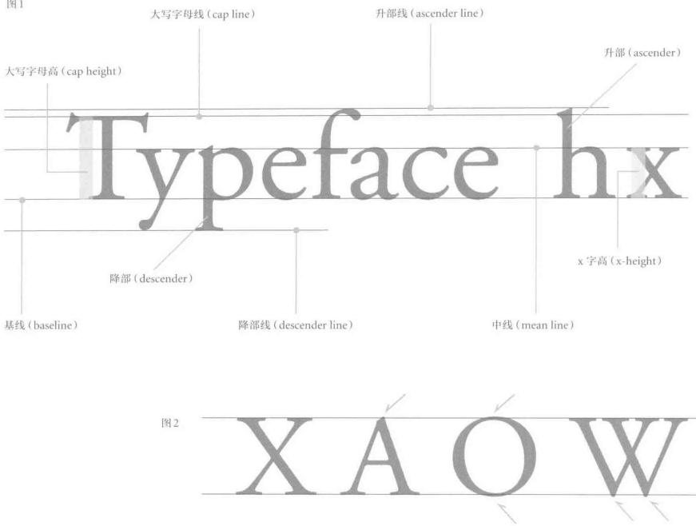
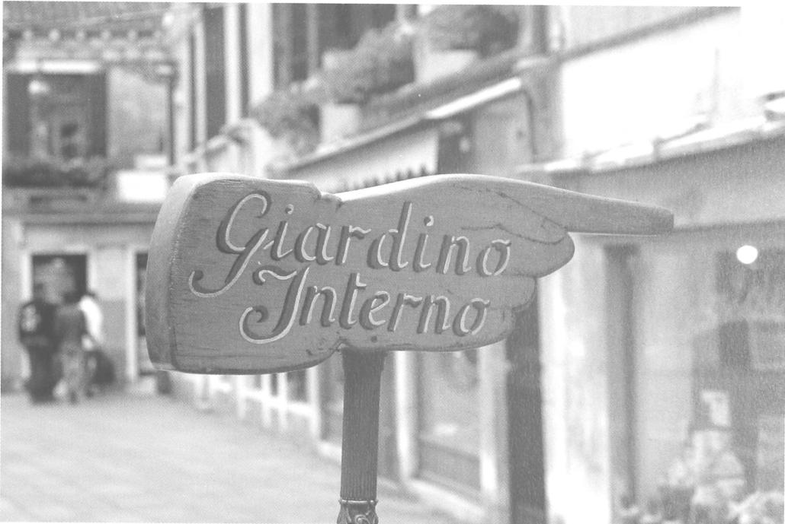
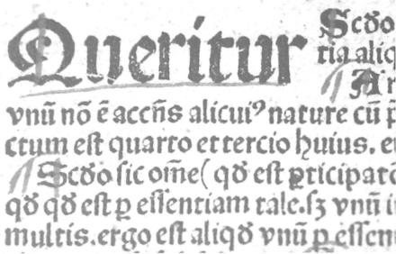
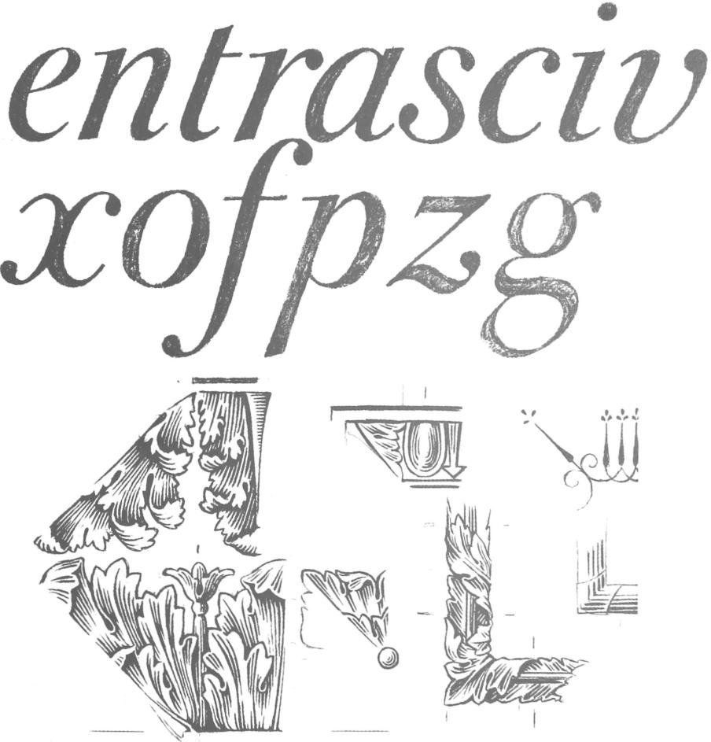
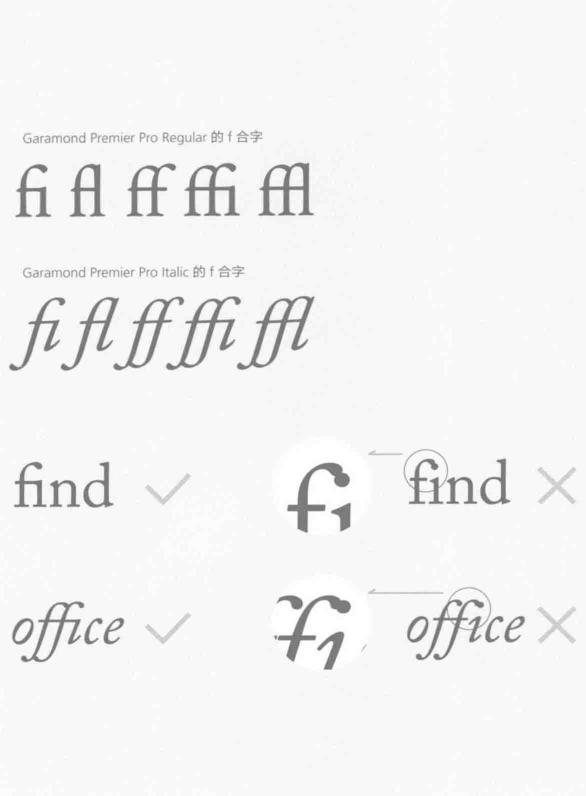
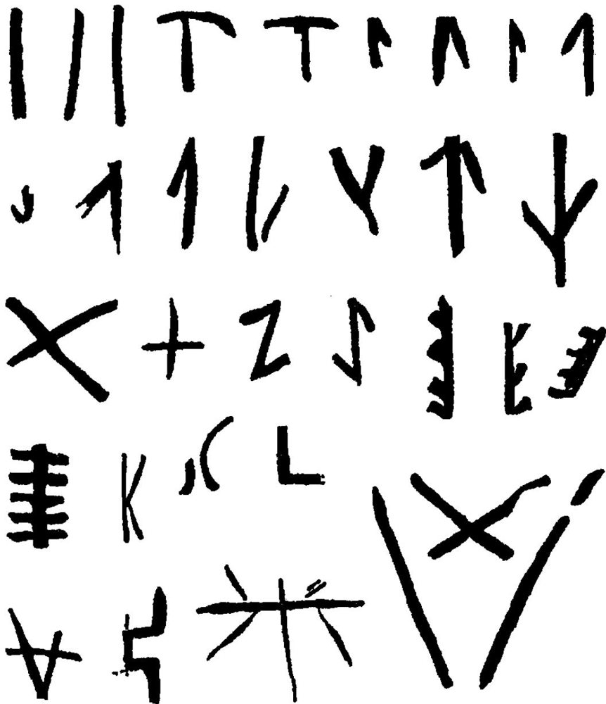
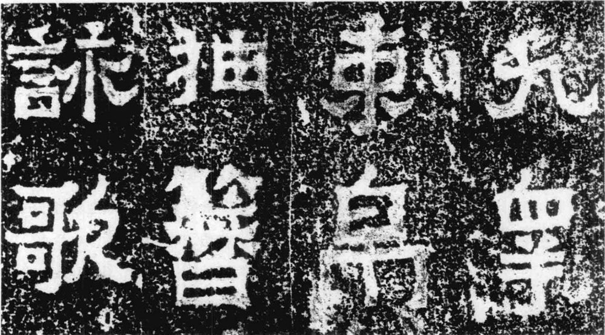
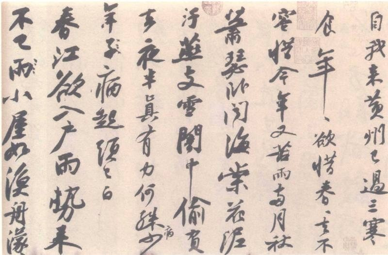
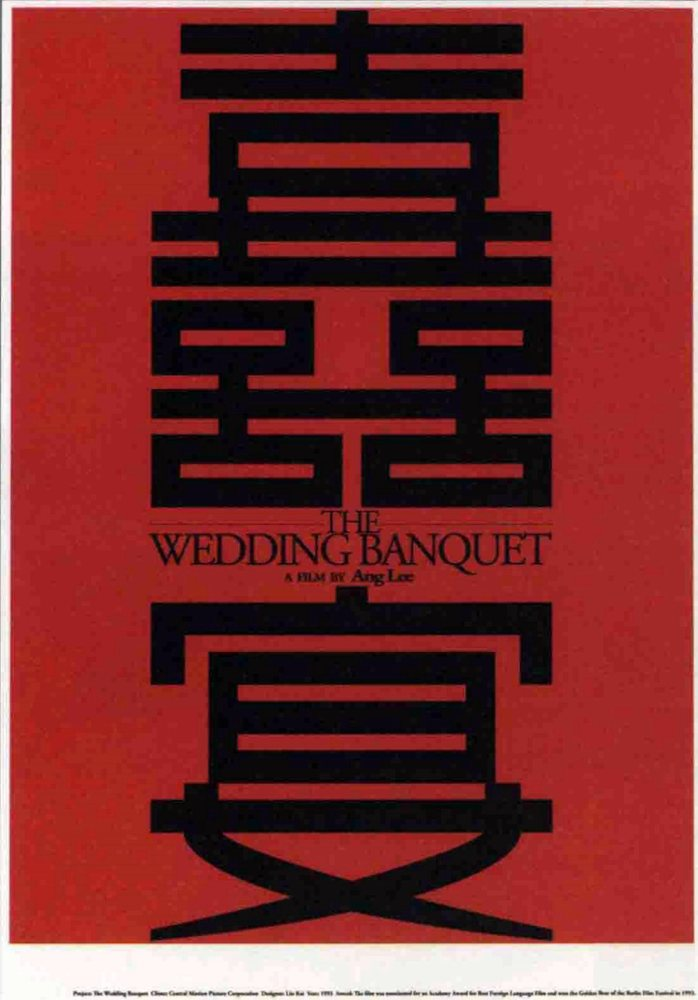
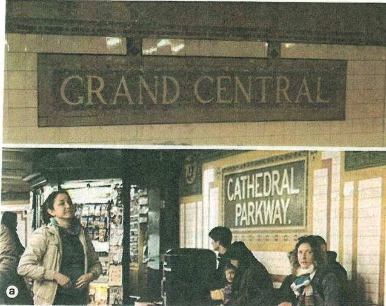
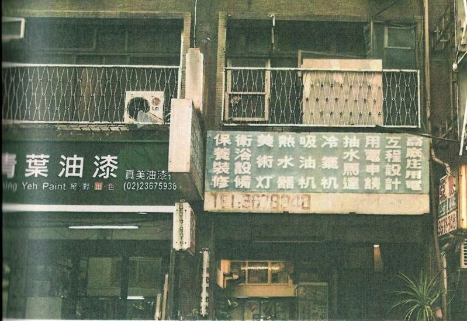
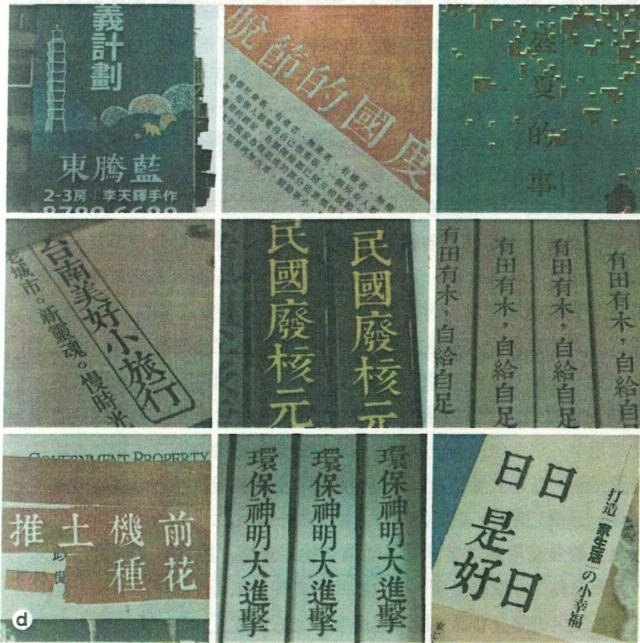
5. Source Bookshelf
Suggested reading order: 《文字設計的原理》 → Akira Kobayashi, 《西文字體 1》 → 《字型散步》 → 《西文排版》 → the 《字誌》 magazine series (to understand the industry) → 《漢字書法之美》 (cultural grounding).
Show 57 titles
- Typography 字誌：Issue 01 - Typography 字誌：Issue 05_PDF - [002]自由字在：字體設計與創意 - [015]中國字體設計人：一字一生 - [034]西文字體1：字體的背景知識和使用方法 - [035]西文字體2：經典款字體及其表現方法 - [054]文字設計的原理_文字設計所必須的信息和技巧 - [073]新概念字體基礎&應用_蘇克 - [075]説文解字 - [099]字言字語 - [103]字體傳奇 影響世界的Helvetica - [114]治字百方 - [116]字型散步 - [123]街道文字_小林章 - [138]西文排版_排版的基礎和規範 - [146]漢字書法之美_蔣勳 - [155]文字的故事 - [156]意匠文字 - [188]設計師的字體世界 - [190]文字的力與美 - [214]漢字的誘惑 - [215]中國美術字史圖説 - [225]漢字設計與應用 - [257]十二生肖形意字 - [258]書法字體設計技巧與應用 - [269]平面排版_基本的基本 - [283]Tokoy TDC VOL.28⭐ - [314]排版的風格 - [325]字體設計的規則與藝術 - [344]Tokoy TDC vol.29⭐ - [384]字體呈現3⭐ - 字體設計基礎 - 【會員專供】中國近現代字體應用文獻展 - 【會員專供】文字設計在中國邀請展 - 【會員專供】超語境國際文字設計論壇 - 世界文字發展史_11407704 - 今日字體 - 創意字體設計與製作-www.afx365.com - 國際平面設計基礎教程-TYPOGRAPHY字體設計 - 字型之不思議 - 字型之不思議 小冊-手寫 - 字體呈現-Q - 字體呈現二（完整） - 字體呈現小冊一 - 字體呈現小冊二 - 字體怡人 - 字體設計100+1 - 字體，海報設計部分 - 展覽，印刷字體部分（雙頁） - 序言 - 排版造型_白井敬尚 - 文字設計的原理 - 書於竹帛中國古代的文字記錄_12270059 - 歐文字體Ⅰ - 歐文字體Ⅱ - 自由“字”在 字體設計與創意13696100(1) - 設計入門教室 2 文字設計的原理6. Study Cues
- Set the same headline in Garamond, Bodoni and Helvetica, and describe how their characters differ.
- Choose a typeface for the body text of a Chinese novel: Song or Hei? State the type size, leading and number of characters per line.
- Photograph three shop signs in your city. Score them on legibility, visibility and readability, and give your reasons.
- Why should Chinese characters be "tight at the top, loose at the bottom"? Take one character, deliberately put its centre of gravity at the exact middle, and compare the result.
- Using only weight and space (no colour or size changes), build three levels of hierarchy for an event poster.
- Design a pair of Chinese and English logotypes for a brand name, and explain how the two match in weight and stroke style.
7. Each Book
Each book in the bookshelf is described below. Every title above links to its section.
Typography 字誌：Issue 01
Scope. This is the first issue of the Chinese edition of 《Typography 字誌》 magazine, and its theme is "make your own type". It puts columns, installations, exhibition lettering and type-related goods in one magazine. It is useful for seeing several kinds of work in the type industry side by side: designing Latin letters, designing Chinese characters, buying fonts and making posters. Each columnist covers one strand; the issue is not a single author's book.
Main ideas
- The first issue lays out learning paths in concrete terms: type design software, workshops, studying Latin type abroad, and how to find and buy fonts. A list of font foundries is included at the back.
- Akira Kobayashi's series begins with making a sans serif. Ko Chih-chieh writes about web fonts; Chang Hsuan-hao about how typesetting affects reading; Aaron Nieh about posters; and Su Wei-hsiang records learning lettering with brush and ink alongside Akira Kobayashi and Japanese hand-painted sign craftsmen.
- The Comedy Carpet in Blackpool (Gordon Young and Why Not Associates, 2011) lays about 160,000 letters on the ground. The words come from comedy theatre, and the typefaces were chosen to match a century of posters.
- The job of exhibition lettering is to support the exhibits. The type should carry the overall mood of the exhibition, but the works remain the stars.
- When designing Chinese characters, each new character must be checked again and again against the first ones drawn, dong ("east") and guo ("country"), to see whether stroke weight and the space inside the character still belong to the same family.
Methods
- When reading the columns, take notes in three columns: is this section about Latin letters, Chinese typefaces, or hand-painted signs? The three have different tools and different standards of finish.
- Choose a set of products or installations and record only "what the type is doing in the space", not just whether it looks good.
- When you try designing a few Chinese characters yourself, first fix two reference characters. Every time you add a character, compare its weight and inner space against them.
- When looking for fonts, write "where I found it" and "how to buy it legally" on the same list.
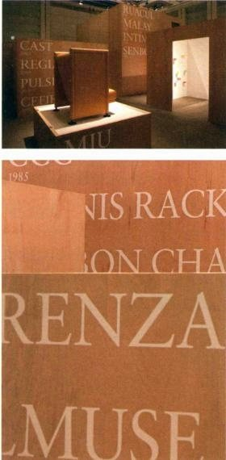
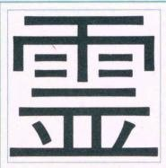
Study cues
- In your own words, explain separately what problem each of these must solve: web fonts, poster display type, and hand-painted signs.
- Write guo ("country") and dong ("east"), then write three characters with very different stroke counts. Mark any stroke that suddenly looks too thick or too thin.
Typography 字誌：Issue 05_PDF
Scope. The readable text in this issue focuses on two things: Sony's custom Latin typeface SST, and recent work by the designer Chang Hsuan-hao. The text layer of the PDF is badly damaged, so only sentences that can still be matched are used below. SST is a corporate typeface for Latin letters; do not treat it as a model for making a Chinese font.
Main ideas
- SST was made by Sony with Monotype and positioned between Helvetica and Frutiger: it needed the crispness of Helvetica and the warmth of Frutiger.
- Sony asked for strokes that look equally thick. Measuring the same and looking the same are not the same thing.
- To make the capital S hold its own in "SONY", its diagonal stroke was reworked. The darkness of the a, the top of the f, the tail of the y, and the left-right balance of the numbers 3 and 6 were each corrected one by one.
- The new typeface had to fit documents originally set in Helvetica: the width of a set paragraph could not suddenly change.
- The same issue also shows Kilo Condensed, which Chang Hsuan-hao is working on, and his exhibition graphics for "100 Years of Czech and Slovak Graphic Design". The contents also list an on-site record of 《島：字型提案概念展》.
Methods
- Set "Sony" once each in Helvetica, Frutiger and SST, and compare only the capital S, a, f, y and the numbers 3 and 6.
- Set the same paragraph in one column with the old typeface and one with the new, and check whether the line length suddenly gets wider.
- When reading this issue, keep separate notes on the process of a corporate custom typeface and on the type used in exhibition posters.
- Where the text layer is garbled, go by the images. Do not treat garbled text as technical terms.
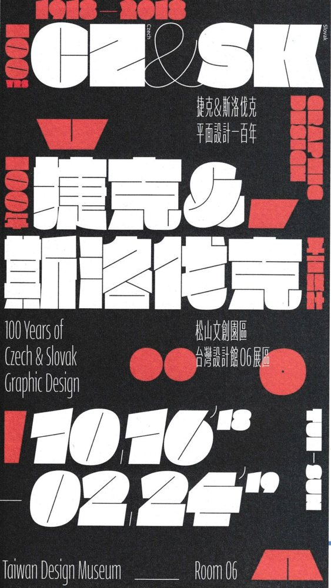
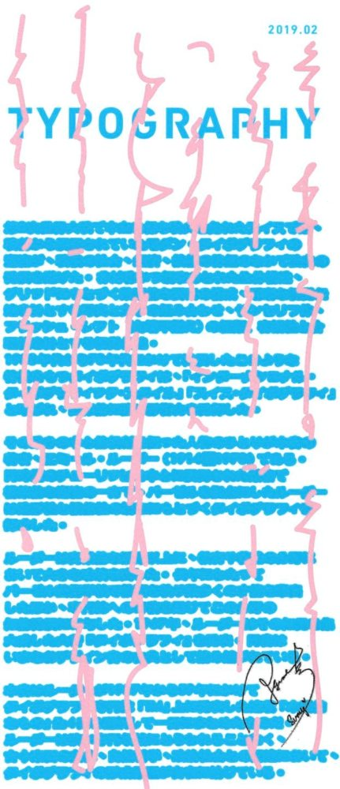
Study cues
- SST has to look like both Helvetica and Frutiger. Which letter would you change first to achieve this? Give your reasons.
- When a company changes typeface, why must it check the width of a paragraph set in the old and new typefaces?
自由字在：字體設計與創意
Scope. This is a book of techniques for Chinese display lettering, compiled from exercises and commercial jobs posted on ZCOOL. The first two chapters cover structure, centre of gravity, stroke weight and the "36 transformation stratagems"; only the third chapter deals with logos and event titles. It teaches how to shape a few characters, not a print font of thousands of characters, and not the rules of Latin letters.
Main ideas
- The author puts progress down to one thing: practise a lot. The stratagems in the book come from quantity, not from a complete theory of type.
- The basics chapters first deal with principles, structure and centre of gravity, stroke weight and the character of lettering, then with basic methods of building characters. The character must match the meaning of the word: for example, strokes for a medicine and for a game should not look the same.
- The "36 stratagems" are a list of transformations for display lettering: joining between characters, joining within a character, turning strokes into graphics, stretching, squashing, making bolder, making thinner, simplifying, exaggerating, rounding corners, reworking Song style, mixing Chinese and Latin, all the way to a type diary.
- Stratagem 14, "Old type, new design", uses old stroke shapes for new briefs. Example assignments include "True Self Manifesto" and "Youth Hostel".
- Chapter 5 writes song lyrics, films and life experiences into lettering. Lyric exercises such as the ones based on Wu Bai train how emotion gets into strokes, not the grey value of a text typeface.
Methods
- Practise only three stratagems a week. For each one, make a "before / after" of the same four-character phrase and write one sentence on what tone the transformation serves.
- Before joining strokes or turning them into graphics, check that the characters can still be read from a distance.
- Keep commercial work and diary work in two separate folders. Do not hand in a client's identity and your own expressive strokes as one piece.
- When you reach the Song style reworking, borrow only the flavour of its horizontals and verticals. Do not force the rules of a whole Song font onto four display characters.

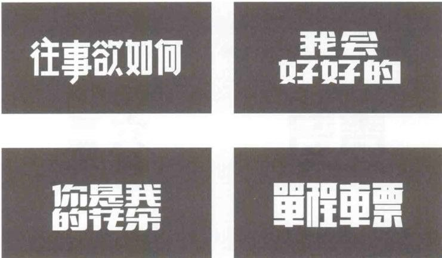
Study cues
- Letter "Youth Hostel" once with "joining between characters" and once with "simplified strokes". Which looks more like a hostel, and which is just hard to read?
- Turn a recent song lyric into four characters. Write down which stroke you changed and which emotion in the lyric it corresponds to.
中國字體設計人：一字一生
Scope. Over more than ten years of interviews, Liao Jielian recorded the people and institutions who made China's printed Chinese characters over almost a century. Lü Jingren's preface states the problem clearly: readers use these characters every day, yet cannot say whose hands they came from. This is an industry history of printed Chinese type. Latin letters appear only for comparison, and techniques for decorative lettering have to be found in other books.
Main ideas
- The book's timeline runs through movable type, type matrices and digital type. Its institutional thread follows the "one institute and three factories" and type-making units such as the Shanghai Type Matrix Factory No. 1. Interviewees include Xie Peiyuan, Qian Zhenzhi, Yu Bingnan, Zhou Jincai and Xu Xuecheng.
- Making a text typeface means managing three things at once: stroke shape, structure and grey value. Xinbao Song, Qingke style, Song Yi, STKaiti, Huafeng Fangsong, Xiaoyao and Kai were all made to serve newspapers, dictionaries and long texts.
- In the second generation, Zhu Zhiwei's Boya Song is aimed at general reading, while Ni Chuwan's Shuizhu style and display faces grow out of everyday experience. What they aim to improve is scanning, not the decoration of single characters.
- After 1949, script reform and type-making projects changed a situation in which "the Chinese-character regions had to buy printing type from Japan". Foreign models such as Shuei Song (Shuei Mincho) appear in the book as historical material, not as ready-made answers.
- The book hopes that readers will have sharper eyes when they later discuss the shapes of characters, their beauty and printing problems, and that more people will learn that type-making exists.
Methods
- Make a card for each interviewee: period, the factory or company they served, their representative typefaces, and the kind of reading each typeface was for.
- When comparing two Song typefaces, look only at how horizontal strokes begin, the central space (zhonggong) and the grey value of a whole paragraph. Do not compare which has more "personality".
- Put "type for headings" and "type for dictionaries and newspapers" in two columns. The heroes of this book are in the second column.
- When you read descriptions of stroke shapes (a hidden brush tip, rounded turns, thin yet springy lines), look at a whole page of the illustrations. Do not just memorise the adjectives.
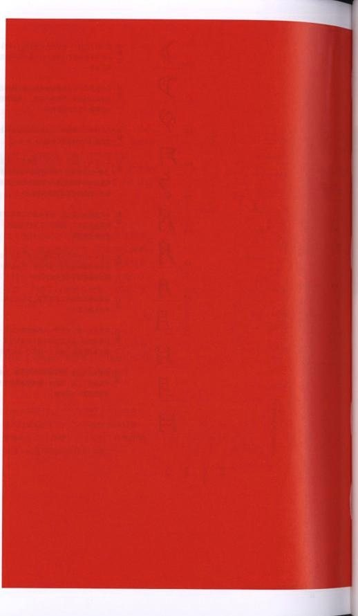
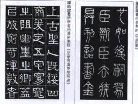
Study cues
- Write one sentence each on stroke shape, structure and grey value to explain why a text typeface suits long texts.
- Why are the designers of printed Chinese characters called the people who "feed and clothe us"? What does this remind the users of type?
西文字體1：字體的背景知識和使用方法
Author: Akira Kobayashi
Scope. This is Akira Kobayashi's introduction to Latin letters, written for Asian readers, with a preface by Adrian Frutiger. It begins with how Roman capitals and lowercase letters were formed, then explains the terms and shows why "geometric" letters drawn with ruler and compass look wrong. It is about Latin type throughout. Do not apply this set of anatomy terms to Chinese Song or Hei type.
Main ideas
- Roman inscriptional capitals went through their own process of formation. Lines that look geometric actually contain visual corrections; you cannot write stable Roman letters with only a compass and a ruler.
- Lowercase letters came from later handwriting. Roman, italic and sans serif are different historical outcomes, not one skeleton with different skins.
- If the left diagonal of an A on a billboard is too thick, the whole sign looks unsteady. An uncomfortable feeling can be traced back to how the letter came about.
- Glyphs and typefaces (a whole design) must be talked about separately. Symbols, numbers and ornaments (called flowers in the age of metal type) also belong to a typeface. Frutiger Symbols brings signage symbols and decorative rules into the same family.
- Lettering is also part of the street scene. Before choosing type, look at the place where it will appear.
Methods
- Draw a "geometric O" with a ruler, then copy a classical O. Write down two places where you had to adjust the curve.
- When you see a sign in Latin type, first decide whether it is roman, italic or sans serif, and only then talk about whether you like it.
- Make term cards: glyph, type family, serif, italic. Pair each card with an example you photographed yourself.
- In an assignment that sets Chinese and English side by side, judge the English line only by this book's criteria: weight, letter-spacing, and whether it matches the tone of the sentence.
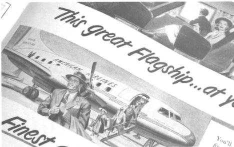
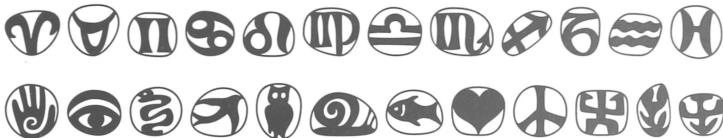
Study cues
- Why can the two strokes of an A not be equally thick? Explain with a sign you have seen.
- Set the same shop name in Brush Script and in a sans serif. Which can still be read clearly above a shop door?
西文字體2：經典款字體及其表現方法
Author: Akira Kobayashi
Scope. The second volume answers "how to choose and use classic Latin typefaces". In his preface, Akira Kobayashi breaks a myth: things French do not necessarily have to be set in Garamond. The first half shows lettering he photographed on European streets; the second half has interviews with type designers and anatomies of Helvetica and Garamond that readers asked for. This is still a book about Latin type. The handwritten lettering on the streets is evidence of usage, not a tutorial on Chinese decorative lettering.
Main ideas
- People whose native language uses Latin letters do not choose type by rigid "country = typeface" rules either. Using type is a pleasure, not a minefield.
- The same word "roman" depends on context: against italic it means upright; against bold it means regular weight. Sans serifs, ligatures, alternates and small caps each have their own job.
- Two typefaces at the same size can have similar skeletons but completely different spacing. When choosing type, look at the spacing too.
- Traditional street lettering, market signs and street names on tiles show what type looks like in everyday life. On Mallorca in Spain, blue street names are fired onto tiles, and they feel different from metal street signs.
- The interviews record designers' sequences and intentions. Use them to help you choose, not to memorise style labels.
Methods
- Make a page of terms: the two meanings of roman, sans serif, ligature, alternate, small caps. Pair each with a word.
- Choose two sans serifs that look similar, set the same German or English shop name in both, and mark only the differences in spacing.
- Photograph three signs in Latin type in your own city and sort them into "public signage / shops / handwritten".
- When reading the anatomy of Helvetica or Garamond, write down three parts you will check in future. Do not write "it is famous".
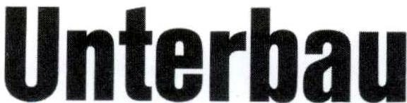
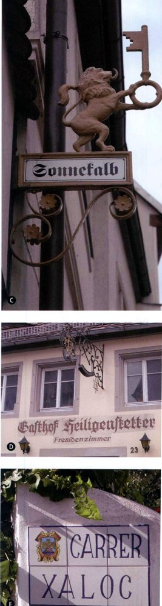
Study cues
- Someone says "a French restaurant must use Garamond". Which reason from the book would you use to respond?
- Find two sans serifs and set "Heiligenstetter". Mark the spacing, not which one you prefer.
文字設計的原理_文字設計所必須的信息和技巧
Scope. This is the Chinese edition of a Japanese typography course. Its steps run from "getting to know letters" to "making a good-looking layout". It teaches Western serif and sans serif type alongside East Asian Song and Hei type; keep the two structures separate in your notes. The examples in this scan lean towards posters: change the typeface of the same sentence and the whole mood of a resort advertisement changes.
Main ideas
- The alphabet and Chinese characters or Japanese kana are not built the same way. Their anatomy terms cannot be mixed, or later judgements about weight and spacing will go wrong.
- On the same resort poster, Hei plus Song can look honest but fails to convey a sense of rest and recovery. Switch to type chosen with the guests and the sense of place in mind, and the atmosphere changes without changing a word.
- The thin Song on a film poster, small and straight, leaves quiet room for the imagination around the photograph. A heading does not always need to be bold.
- Set the same sentence in an extra-bold Hei on a steamy background, and the type itself becomes the star.
- Cutting letters out of coloured cellophane uses type as an image. This approach serves the picture, not long reading.
Methods
- Make a comparison table: serif / sans serif for Latin letters, Song / Hei for Chinese characters. In each cell write just one feature you can recognise.
- Pair the same photograph with three kinds of type: thin Song, bold Hei, handwriting. Ask classmates only "does this feel like a place to rest and recover?"
- When you make a heading thinner, check that there is still breathing space on both sides. Thin is not finished just by making the type smaller.
- If you want to turn type into a material (cellophane, shadow, photograph), first write one sentence: does this sentence still need to be read?
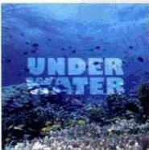
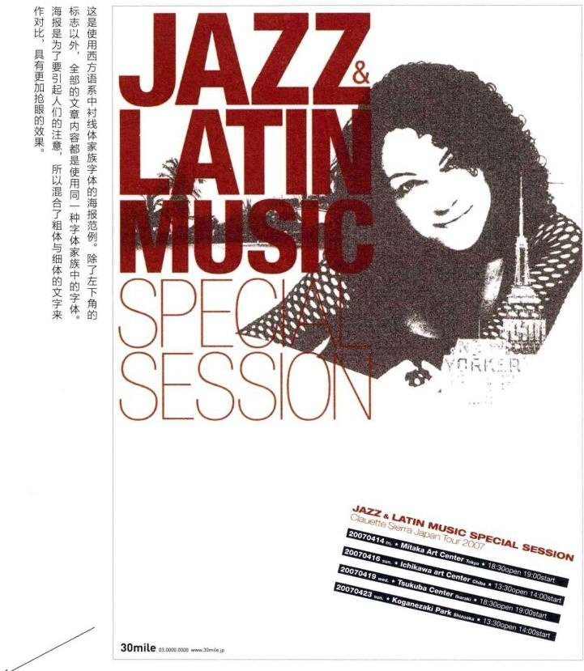
Study cues
- For the same resort advertisement, when would you use thin Song and when bold Hei? Describe one reader for each.
- Pick a poster you have made: are the type and the photograph working together, or just stacked on top of each other? Name the first thing you would change.
新概念字體基礎&應用_蘇克
Scope. Su Ke's textbook puts printing history, measurement, classification, national standards and type space into one course. The contents are clearly split into two parts: the classification and use of printed Chinese type, and the classification and use of Latin type. Hand in assignments chapter by chapter. Do not write the question of serifs on Hei type and the question of stress in Latin letters as one paragraph.
Main ideas
- The Chinese thread runs from phono-semantic characters, clerical script and movable type to the Song style that matured in the Longqing and Wanli reigns of the Ming dynasty, then on to phototypesetting and the digital type of the 1980s. Gutenberg's metal type belongs to the Latin thread.
- The book pays special attention to names: in Chinese, the term heiti (literally "black type", meaning sans-serif) must not be confused with blackletter or bold in Western classification.
- Whether a Hei typeface has serifs must be judged by looking at the stroke ends. The large specimens of FounderType Hei Simplified are there to discuss stroke shape, not as decorative lettering drafts.
- The later chapter on Latin letters gives full specimens of capitals, lowercase, numbers and punctuation. The measurements in that chapter (type size, face) are not the same yardstick as the face of Chinese characters.
- National standards and type space each have their own chapter. Making a font and making a heading follow different specifications.
Methods
- When reading the history, draw two timelines: printed Chinese type and Latin metal type. Write only the centuries where they meet in the middle.
- Before using the word heiti, write down whether you mean Chinese Hei type or the darkness of Western type.
- When looking at the large FounderType Hei characters, trace only the two ends of the horizontals and the turns. Write down whether the ends you see are flat, round, or carry a slight serif.
- Use the Latin specimen pages to recognise families and weights. Do not adjust Chinese strokes on those pages.
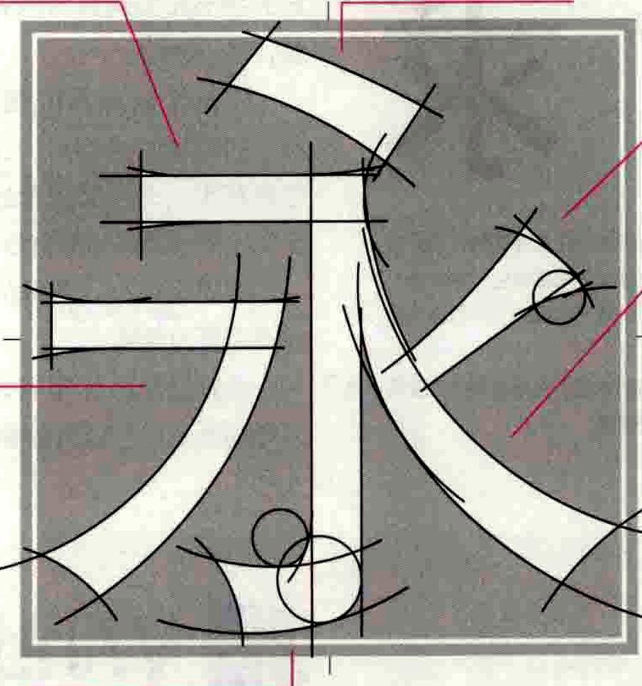
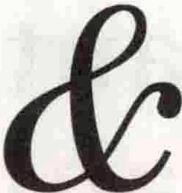
Study cues
- In two sentences, explain what "black" means in the Chinese heiti and what "black" means in a Western Bold.
- Why can the period when Song type matured, as given in the book, and Gutenberg's metal type not be written as two names for the same thing?
説文解字
Scope. This is an illustrated book that tells a story for each head character. Each character moves from oracle bone script, small seal script and clerical script to regular script, with its meaning alongside, not design steps. It helps you see that a character's shape was once a small picture. When you use it for display lettering, borrow only the meaning; do not force small seal script into modern type weights.
Main ideas
- The layout gives one entry per character: ancient form, modern form, story. The index is by character, so it works as a dictionary, not as a process manual.
- The character heng ("constant") puts the moon and the heart together to describe life flowing with time; only later did it extend to mean "often". The picture is the evidence; the extended meaning came later.
- The character shi ("room") comes from zhi ("to arrive"); its sound overlaps with the idea of stopping to rest, so it means resting inside a house. From bronze inscriptions and small seal script to today's words for "classroom" and "office", the meaning of room is still there.
- A single page usually shows several scripts side by side. What changes is the shape of the strokes; what you check is whether the structure is still there.
- Stories like these tempt people to draw every character as an illustration. Printing type and display lettering must still be readable as that character first.
Methods
- Each week, look up ten characters you will use in headings. Copy only "what the original picture was" and "today's common meaning", one sentence each.
- If you put an ancient form into a design, set today's regular script form next to it so readers can match them.
- Hand in the story pages and the type assignment separately. The stories help you choose a topic; the assignment must be readable type.
- Do not learn letter-spacing, weight or font engineering from this book.
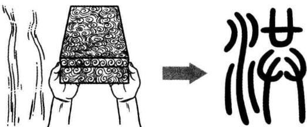
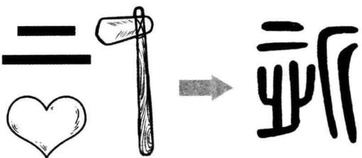
Study cues
- Choose heng or shi and draw it in four boxes: oracle bone (or bronze inscription), small seal, clerical and regular script. In which box does it start to look less like a picture?
- If your poster uses the ancient meaning of this character, which modern Chinese characters would you need to add to the heading so that nobody misreads it?
字言字語
Scope. These are class notes on Chinese display lettering, running from "what is type design" to revising drafts in case studies. The book divides methods into two kinds and expression into emotional and rational. It serves the pitch: clients need to understand why you made each change. It does not teach the counters of Latin letters, or how to make a complete printing font.
Main ideas
- Classification and process come in the first chapter: features, the two approaches, creating original characters, and only then proportion, position and arrangement.
- If an emotional draft cannot be explained, the client can only guess. A rational check can be listed as questions: does it suit this industry, does it have its own look, will buyers like it, is it trustworthy, and what is each formal element doing?
- Before starting, make your reasons explicit. Personal taste, the client, existing fonts, woodblock editions, hand drawing and machine drawing can all be reasons, but you have to be able to state them.
- The flowcharts are for beginners. Experienced designers skip steps, but the order of dependence must remain: you need not draw the framework, but you must know what decides what.
- Errors of spatial proportion are drawn rather exaggerated in the book so that you can see the central space and the strokes competing for room. It is not encouraging you to hand in an equally exaggerated draft.
Methods
- In every pitch, answer the five rational questions first, then open the finished artwork.
- When revising, change only one thing: proportion, or position, or arrangement. Change all three together and you will not know which one rescued the character.
- Copy one of the book's exaggerated error examples, then make a corrected version that pulls it back, and hand in both.
- From the case studies (such as "European Sunshine" and "Shangfeng Juece"), note down only the order of revisions, not the final decoration.
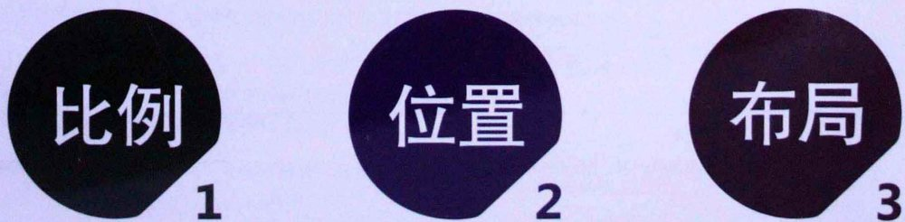
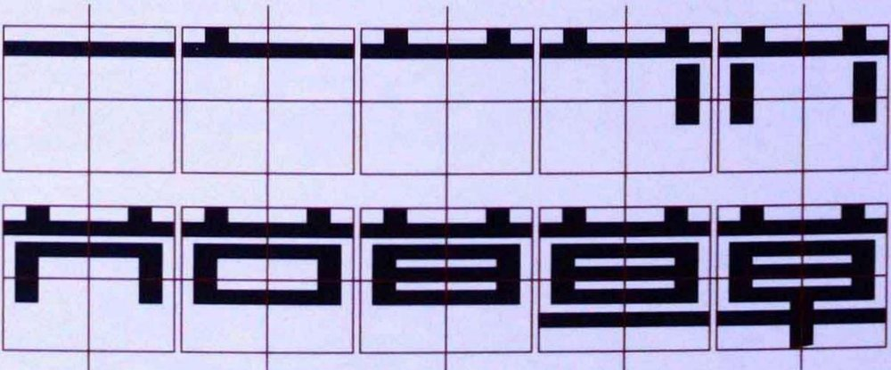
Study cues
- Use the book's five rational questions to assess a recent piece of display lettering of yours. Which question can you not answer?
- Draw the character guo ("country", a frame enclosing inner strokes) with a cramped central space, then draw a corrected version. Did you move the outer frame or the inner strokes?
字體傳奇 影響世界的Helvetica
Scope. This is the Chinese edition of Helvetica Forever, which tells how a Swiss sans serif went from the Haas Type Foundry to the whole world. The preface to the Chinese edition explains that Western type is already part of China's visual culture and is also a way into understanding Western layout. This is a history of Latin type. The neutrality of Helvetica cannot be translated directly into "Chinese Hei type should have no personality".
Main ideas
- In the 1950s, Eduard Hoffmann saw the commercial success of Akzidenz-Grotesk and decided that Haas should make a new sans serif. Max Miedinger was the other father of its form.
- In the age of metal type, a typeface meant tonnes of lead and a large sum of money. The book records the weight and cost for a medium-sized printing works to stock a full set of sans serif type in 1954. Downloading a family today and deciding to cast one back then are not the same kind of risk.
- The typeface later appeared both on luxury brands and on very crude leaflets. It became a model because it was used so widely, not because every use of it was good.
- The book also covers the origins of sans serif type, the design timeline of this typeface, and related terms.
- The Haas specimen pages show the family with city names and foundry names. What you see is how a whole typeface looks in a specimen.
Methods
- Draw a 1950s timeline: who proposed it, who drew it, which foundry, and which existing sans serif it was answering.
- Collect five real examples of Helvetica and sort them into "brand systems" and "casual use". Write down whether the difference lies in spacing, weight or context.
- Use the weights and costs in the book to explain to a classmate why a new typeface could not be released every day in the age of metal type.
- If the assignment sets Chinese and English side by side, use this book's judgements only for the English line; choose the Chinese line separately.
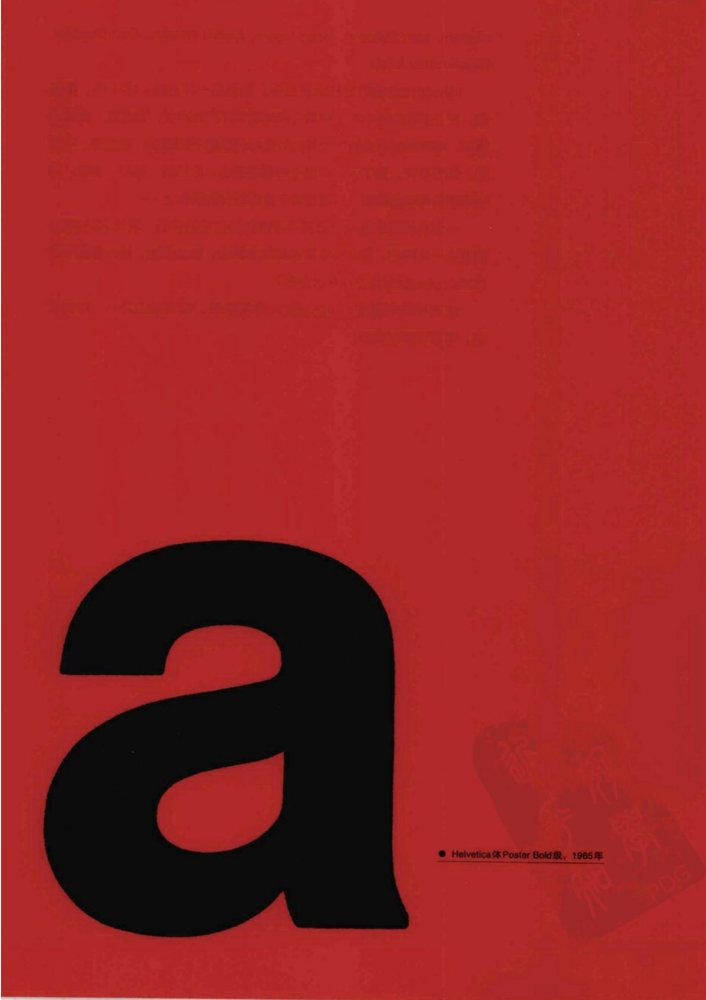
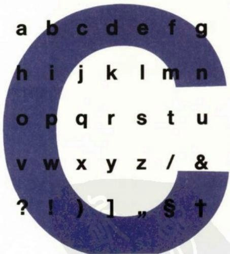
Study cues
- Why did Hoffmann think the market needed another sans serif? Which existing typeface was he responding to?
- Find an example that uses Helvetica but is hard to read. Is the problem the typeface itself, or the size, spacing and context?
治字百方
Scope. Zuo Zuo's book collects about a hundred "cases and prescriptions" for Chinese brand lettering, from commissioning and communication through to imitating a form, forming your own and breaking the form. Cases include the record shop "Polyphony" and "Mud Commune", which was made with metal type and too much ink. It treats the identity of a few characters. Although the back of the book covers the basics of Chinese typesetting, its core is display lettering and logotypes, not a manual of Latin typesetting.
Main ideas
- A name must first go back to the client's life. Polyphony is a musical term; the shop sells vinyl, comics and coffee, and the owner wanted clean Japanese minimalism, not industrial retro. The character of the lettering follows that judgement.
- "Imitate the form, form your own, break the form" is a sequence of practice: first copy a kind of old stroke shape accurately, then make it into your own lettering, and only at the end are you allowed to break it.
- Texture can be a method. For Mud Commune, old Song metal type was custom-made and over-inked to imitate letters pressed into mud. What is borrowed is the impression, not the reading grey value of Song type.
- Another case uses rounded, joined strokes for an application aimed at students' tastes: first ask what they watch and what they dislike, then decide how plump the strokes should be.
- Communication versus independent judgement, and logic versus inspiration, are set up as paired topics. A pitch needs both sides; you cannot hand in inspiration alone.
Methods
- When you take on a Chinese logo, write ten lines of what the client said before you start drawing. The ten lines must include styles they do not want.
- Use three sheets of paper to go through imitate, form and break. If the "break" sheet has lost touch with the first two, throw it away and start again.
- Before adding texture, ask: is this texture a material of this industry, or just a generic old-paper effect?
- The Western book titles and musical terms in the book are only bilingual elements within the cases. For typesetting rules, go back to the books on Latin type.
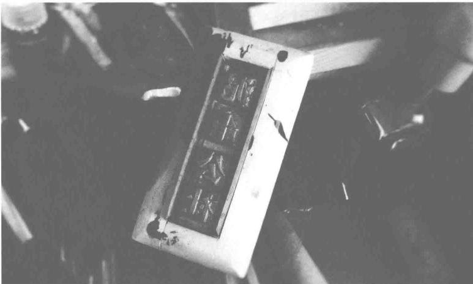
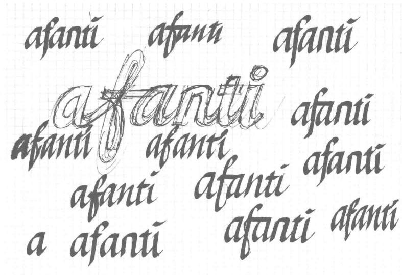
Study cues
- If the client says "no retro industrial style", would your first draft still use worn metal type? Write down your alternative.
- Take the two characters of Fudiao ("Polyphony") through imitate, form and break. Mark the stroke that still survives in the broken version.
字型散步
Scope. This book walks into Chinese typefaces through everyday life: airports, motorways, markets, the Taipei metro. It opens with a true story from Songshan Airport: a handwritten note saying "all pickled mustard tuber" (quanbu zhacai) was read as "all explosives" (quanbu zhayao). It teaches the legibility, visibility and readability of Chinese typefaces in public space. Latin examples are only for comparison, and hand-drawn display lettering is not the focus of this book.
Main ideas
- People recognise characters by their outlines. The characters for "vegetable" (cai) and "drug" (yao) both sit under the same grass radical, and "press" and "explode" (both zha) share the same right-hand part and differ only on the left. When outlines are this close and the handwriting is messy, they get misread without context. Legibility asks: can this character be recognised correctly within a second?
- Public safety raises the standard. Motorways and airports leave no time for guessing. The book points out that the signs at Taoyuan Airport used PMingLiU at distances and speeds it is not suited to.
- Visibility asks whether something stands out or hides. Readability asks whether a block of information can be taken in. The three must be judged together; you cannot simply call a pre-installed typeface "ugly".
- PMingLiU looks crude, but the problems in its curves only show when it is enlarged. Ugliness is often a matter of the wrong size and setting, not proof that the typeface fails in body text.
- Consistency makes a whole signage set into one system. If every metro station name is treated differently, passengers lose their sense of "I am at this station".
Methods
- When assessing a public sign, write three lines: legibility, visibility, readability. In each line give just one thing you can check while standing where you are.
- Make two signs with the same station name, one in Ming and one in Hei, and look at them from both ends of a corridor. Do not judge only by zooming in on screen.
- Collect five pairs of Chinese characters whose outlines are too close, and explain which pair is most dangerous in handwriting.
- In a system assignment, set the weights and sizes first, and only then discuss whether individual station names look good.
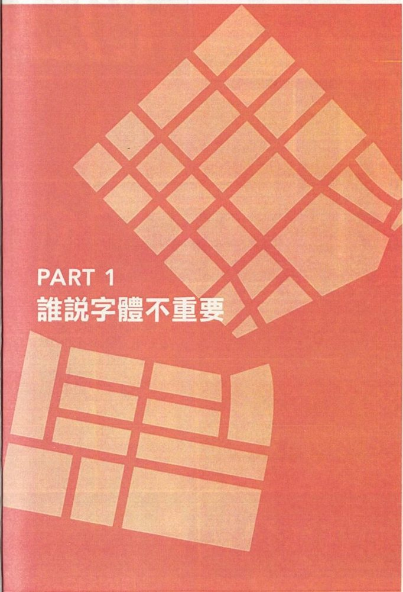
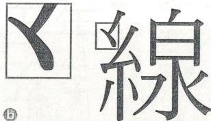
Study cues
- Use legibility to explain the "pickled vegetable / explosives" mix-up. If the note had been printed, what kind of Chinese stroke shapes would reduce misreading?
- Choose a sign on campus. Write down whether, from three metres away, it fails on legibility, visibility or readability.
街道文字_小林章
Author: Akira Kobayashi
Scope. Akira Kobayashi treats the lettering on the street as something to observe: why rounded type is everywhere in Japan, how street signs differ between Europe, mainland China, Hong Kong and Taiwan, how sign painters write "decorative lettering", and how airport signs handle numbers. Much of the first half is about Japanese public lettering and hand-painted signs; the second half moves on to how Latin typefaces such as McDonald's, Lufthansa, Akko, Garamond and Bodoni are actually used. Record Chinese characters, Japanese kana and Latin letters on the street separately.
Main ideas
- Japanese "Stop" signs and road signs use rounded type a great deal. This is a street habit formed over a long time, not one designer suddenly liking rounded corners.
- Only when you look at Europe, mainland China, Hong Kong and Taiwan side by side can you see where rounded corners, serifs and handwriting each belong. You cannot judge one city by the habits of another.
- Sign painters talk about how the brush is used. Writing in the decorative-lettering manner is a craft of the hand, a different kind of production from a rounded font file.
- Timetables and door numbers need tabular figures; proportional figures will not line up in a column of numbers. The book explains this with the two kinds of figures in Frutiger.
- Swiss street signs, advertising columns, theatre notices, Hong Kong's spray-painted lettering and the hand-painted signs of Buenos Aires are all examples of "how type is read on the street". He treats Cooper Black as a recurring character of the street.
Methods
- On a walk, take photos under three labels: public signage, hand-lettered shop signs, brand typefaces. Back in class, identify the typeface names.
- When you see a row of numbers, first decide whether they are tabular or proportional, and only then talk about the design.
- When you interview or imitate a hand-painted sign, record the stroke order and tools, not just the final outline.
- When comparing Hong Kong spray-painted lettering with Japanese rounded road signs, write one sentence each on the distance at which it must be read.
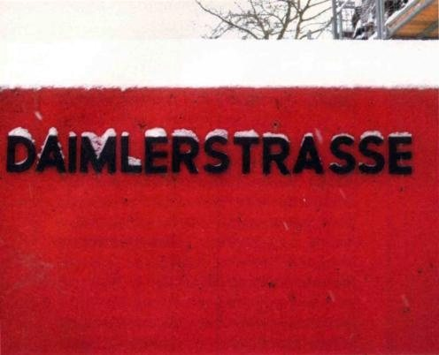
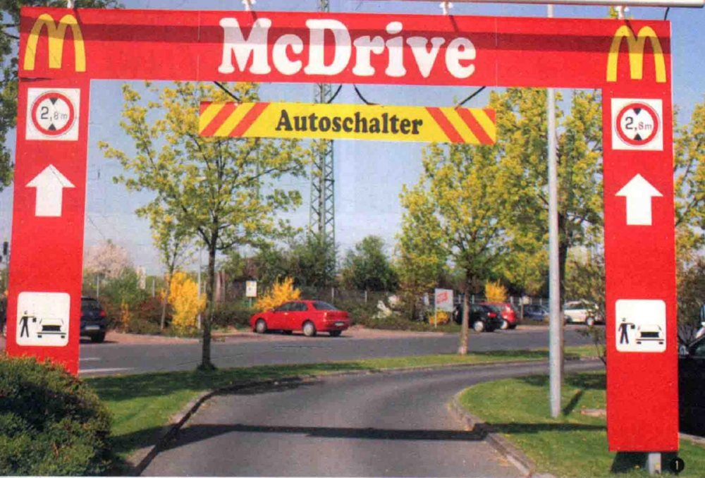
Study cues
- Why are proportional figures unsuitable for a station timetable? Demonstrate with three lines of numbers.
- In your city, photograph a hand-lettered shop sign and a public sign in rounded type. In one sentence each, state the reading distance it must serve.
西文排版_排版的基礎和規範
Scope. This book covers the rules for setting Latin letters into text. The author, Masao Takaoka, carries on the letterpress training in Latin type of the Kazui Press. Akira Kobayashi wrote a note for the Chinese edition. The main text is about typesetting, not type design. Letter-spacing, word spacing, leading, small caps, em and en are all tools of Latin typography. Chinese typesetting has no equivalent "word space", so the spaces in this book cannot be carried straight into Chinese.
Main ideas
- Software lets anyone pick any typeface and size, so unfinished Latin typesetting is everywhere. Good-looking text comes from awareness of a few things, not from one universal formula.
- The model for capitals is Roman inscriptions of the first century AD; the model for lowercase is Renaissance manuscripts. When choosing type, know which tradition you are using.
- Word spacing is often judged by the width of a lowercase e. To people unfamiliar with Latin text this space looks too narrow; it is widened only in children's books.
- Medieval manuscripts used a smaller type area, and the margins were often filled with notes. The type area does not mean covering the paper with text.
- In early metal type, the uses of U and V, and of W and VV, were not yet divided as they are today. Later type designers each shaped their own letters in this gap.
Methods
- Set a paragraph of English with two versions of word spacing: one close to the width of e, one as wide as spaces added into Chinese text. Read it aloud and mark where you run out of breath.
- Check three levels: lowercase, small caps and all caps. Do not use shrunken capitals as fake small caps.
- When setting the type area, first allow for the gutter and head margin, then decide the type size.
- In a paragraph mixing Chinese and English, follow this book for Latin punctuation and spaces, and Chinese conventions for Chinese punctuation. Do not have each side give way and merge them into a third system.
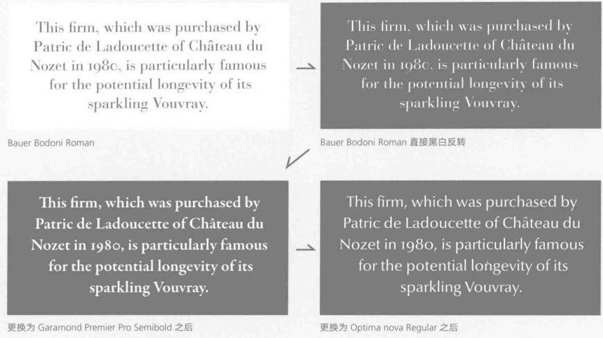
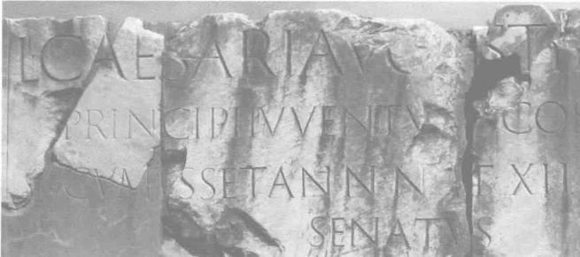
Study cues
- Set five lines of English. Tighten the word spacing from "too wide" to "close to e". In which version are you less likely to lose words before reaching the end of a line?
- Why can you not shrink capitals and use them as small caps? Point out the difference in stroke weight.
漢字書法之美_蔣勳
Author: Chiang Hsun
Scope. Chiang Hsun looks at Chinese calligraphy through images and literature: knotted cords, Cangjie, the sun in the character dan ("dawn"), horses and frogs in bronze inscriptions, the move from seal script to clerical script. These are essays on aesthetics and civilisation. They explain why Chinese characters excel visually, but they give neither the grey value of printing type nor the spacing of Latin typesetting.
Main ideas
- Chinese characters have long conveyed meaning through sight. Training in alphabetic writing leans towards hearing and analysis; training in Chinese characters leans towards seeing and synthesis. These are two kinds of life with writing, not two kinds of font file.
- On Dawenkou pottery, dan is the sun rising over a mountain or the sea. Later, for the sake of writing, the round sun became a square stroke over a single horizontal line: the image is still there, but the shape has given way.
- A single dan can be a character, a picture and a line of poetry at once. A quatrain of only twenty characters can still stand on its own, and this has to do with such visual economy.
- Early bronze inscriptions were often a single image: a horse, a person, a frog (min). Longer inscriptions came later.
- The ancient form of zu ("ancestor") is direct and bodily. When reading ancient scripts, do not judge the images of early people by today's manners.
Methods
- Choose a character in which you can still see the image. Draw "how it looks on pottery or in bronze inscriptions" and "the regular script you write now", and between them write one sentence on what kind of form it has lost.
- When reading this book, divide your notes into "image" and "act of writing". For the stroke shapes you need in design class, go back to the books on printing type and display lettering.
- Do not turn the book's literary judgements straight into decorative patterns on a poster. First write down what the character must be read as today.
- For assignments that set Chinese beside Latin type, use this book only to explain the visual tradition on the Chinese side. Do not borrow the history of the alphabet from here.
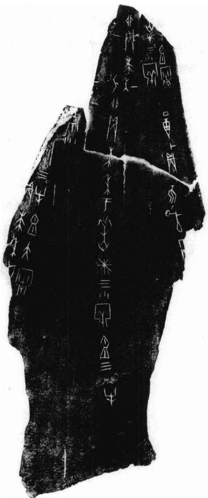
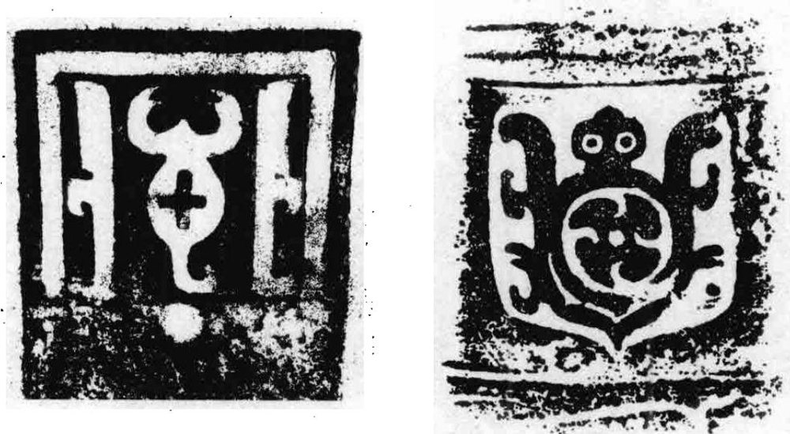
Study cues
- Use dan ("dawn") to explain how one character can be both a picture and a sentence. Which part survives in today's square form of dan?
- When appreciating calligraphy and when making a text typeface, what different question would you bring to the same character yong ("eternal")?
文字的故事
Scope. Tang Nuo's book is a set of essays on Chinese characters, from the dawn of writing and the end point of pictographs to how individual characters leave or stay in daily life. The book pairs wang ("to gaze into the distance") with sheng ("sage"): one stays in the act of looking, the other moves from hearing to an abstract virtue. It is about ideas of writing, not a type specimen, and it has no usable technical illustrations.
Main ideas
- Some characters die and some change their use. Wang has always kept the sense of stretching the neck to look ahead, because this is a bodily action most people can do.
- Sheng moved from a big ear and good listening to wisdom, and then to morality. Once a character becomes a revered proper name, it leaves its original sense behind.
- The more concrete a character, the more feeling and imagination it can hold. The book uses a remark by Borges to show that words about real things turn into poetry more easily.
- Pictographs have an end point. Characters must finally return to sound and convention; they cannot stay pictures for ever.
- Read this book to choose topics and make judgements, not to get rules for strokes.
Methods
- For each character you read about, write two columns: "its original bodily action" and "its abstract meaning today".
- If the two columns are already far apart, do not force readers to see only the ancient meaning in your design.
- Revise this book separately from specimen books. There are no weights, sizes or families here.
- When quoting the book's judgements, restate them in your own words and avoid copying long passages.
Study cues
- Use wang and sheng to explain why some characters stay in daily life while others become lofty concepts.
- Choose a character you would like to make into a poster. Which will readers take in first: its meaning today or its ancient meaning?
意匠文字
Scope. This book shows how Chinese characters were turned into stories and decoration in folk crafts: "Liu Hai Plays with the Golden Toad", "A Fat Pig Nudges Open the Gate", embroidery, the sword of the King of Yue and Qin seals, the custom of cherishing written paper, shenzhi picture-poems, and carved wooden couplets. What it records is design intent: making characters carry good fortune and narrative. This, the reading efficiency of printing type, and the spacing of Latin letters are three different kinds of work.
Main ideas
- Folk artists would graft the human figures of ancient characters onto later legends. Liu Hai and the three-legged toad replaced the little figure originally carrying cowrie shells, so the character gained a new story to tell.
- Pigs are classified in fine detail in the writing system. The New Year print "A Fat Pig Nudges Open the Gate" pictures the wish for wealth as a pig walking towards the front door. Here word and image explain each other.
- Cherishing written paper, shenzhi picture-poems, palindromes and poems are traditions of playing with the writing system. Readers should know that these are games and customs, not general-purpose type.
- The carved wooden couplets at Yongquan Temple in Fuzhou carve sentences into the architecture. The characters have to adapt to the length of the wood and the position of the columns.
- The book's job is to make the lettering on these objects visible. It does not teach you how to make a typeface for setting long texts.
Methods
- For each piece of designed lettering, record four things: the material (paper, wood, cloth, metal), the sentence, the auspicious meaning, and the strokes altered to fit the material.
- When copying a carved couplet, first measure that the panels are tall and narrow, then decide which strokes can be stretched.
- Hand in the "story picture" and the "readable lettering" as two layers. Viewers must be able to point out where the characters are.
- Do not treat the symbolism of New Year prints as the only strategy for a brand logo. First ask whether this industry wants auspiciousness at all.
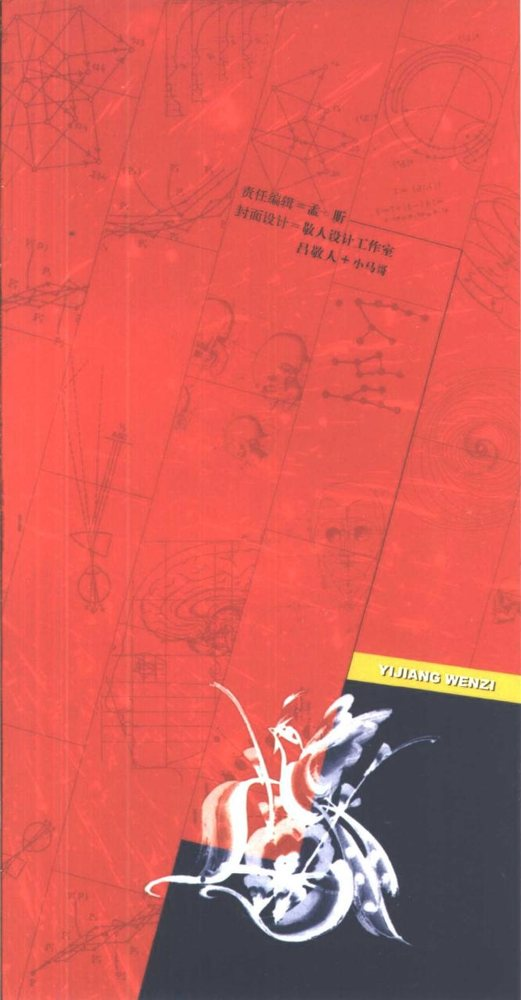
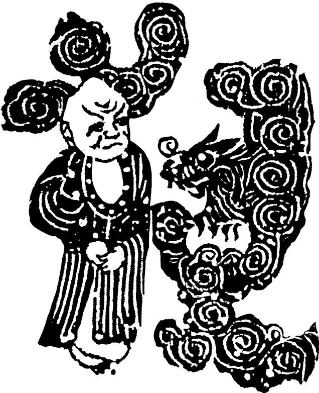
Study cues
- In "A Fat Pig Nudges Open the Gate", which part of the message do the characters carry and which the picture? If you remove the pig, is the meaning still there?
- Carve a seven-character line of verse into a narrow wooden board. Which kind of stroke would you stretch so that it can still be read as characters?
設計師的字體世界
Scope. This is a collection of case studies on brand lettering, published in English as It's My Type. The first half is mostly logos and packaging lettering in Latin letters; the second half has designers talking about their own experience of type, including the realities of Chinese font-making. As you read, sort "drawing a few letters for a brand" and "making a whole Chinese font" into two piles.
Main ideas
- Brand lettering is often adapted from an existing family. Feldthusen's lettering is a variant of News Gothic, made so that it still holds up on packaging of different sizes.
- Handwriting can be chosen for mood. Yellow Bird Tea positions its product as happy and relaxing, so the lettering looks like a child's doodle, with a shadow to give it volume.
- A Chinese font is a different kind of labour. The interviewee from Arphic says you must balance black and white within a limited grid, and because there are so many Chinese characters with so many strokes, it takes many people working together over a long time.
- The interviewee from Makefont compares typefaces to stage costumes: there is no absolute beauty or ugliness; fitting the role matters most. He also points out that payment for, and piracy of, Chinese fonts directly affect whether anyone will still be willing to make type.
- The book also asks designers what they love and hate about type and which typefaces they admire. Use these remarks to understand choices; do not change your own hand to match them.
Methods
- For each case, write two sentences: which family the lettering was adapted from, and the smallest size it has to work at.
- Keep a separate column for handwritten logos: does it imitate speed or material? Speed and material lead you to different tools.
- When reading the interviews about the Chinese type industry, replace "does a single character look good" with "does anyone pay for this typeface, and does anyone finish it".
- In a bilingual logo, make each language work on its own first, then put them side by side. Do not stretch the Chinese to the spacing of the Latin logo.
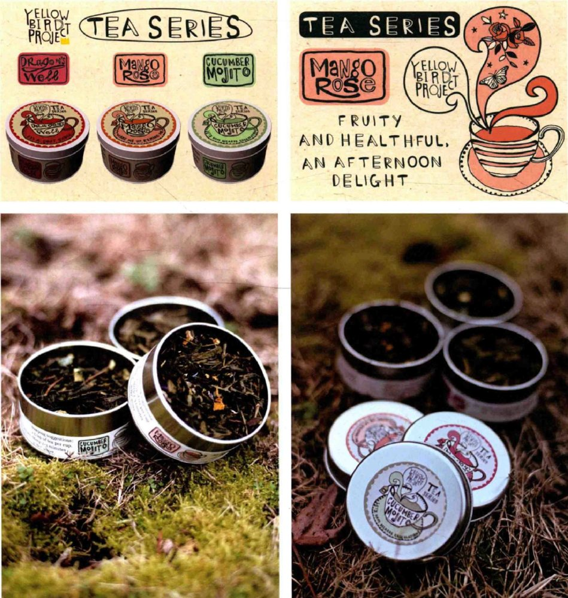
Study cues
- Why did Feldthusen adapt News Gothic rather than draw a completely different set of letters from scratch?
- Using the "stage costume" metaphor, assign a role to each language in your next Chinese-English logo. The two roles can differ.
文字的力與美
Author: Kohei Sugiura
Scope. This book, edited by Kohei Sugiura and translated by Chuang Po-ho, looks at the spiritual power of Chinese characters in Asian life: peach trees shaped like the character for longevity, incense smoke forming longevity, auspicious characters on sails, star names on celestial globes. Here characters are pictures of prayers and also pictures of the cosmos. It is not a Latin type specimen, nor a manual on adjusting the grey value of text type.
Main ideas
- In Korean folk painting of the Joseon dynasty, the trunk of a peach tree is painted as shou ("longevity"), with immortal peaches growing at the ends of the strokes. There are also character trees for fu ("fortune"), nian ("year"), yi ("benefit") and fu ("wealth"). The characters and the plants share the same upward growth through time.
- The branches on peony screens twist into nan ("son"), kang ("health"), gui ("nobility") and ning ("peace"), writing the wishes for sons and prosperity into the wedding decorations.
- Smoke rises from an incense burner and forms shou ("longevity"), with bats flying around it (the word for bat, fu, sounds like fu, "fortune"). The stroke order runs from bottom to top, moving from the ground towards long life.
- A door at the Guangzhou Folk Art Museum has shou carved on one leaf and fu ("fortune") on the other. Here characters guard the doorway of a building; they are not only printed on paper.
- Auspicious characters on sails and the names of gods and buddhas on flags put the force of the wind and the power of writing on the same boat. Celestial globes write constellation names into a picture of the sky.
Methods
- For each work, record which character it is, which natural object it is attached to, and whether the wish points upwards or towards the centre.
- When copying a "character tree", first write a readable shou, then make the branches fit around it. Do not draw the tree first and then hunt for strokes.
- Keep this book in your cultural studies notes. If a commercial logo borrows from it, borrow only the structure of "one character as the hero".
- Treat star charts, incense smoke and sails as separate small projects, so they do not all end up as the same "Oriental pattern".
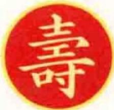
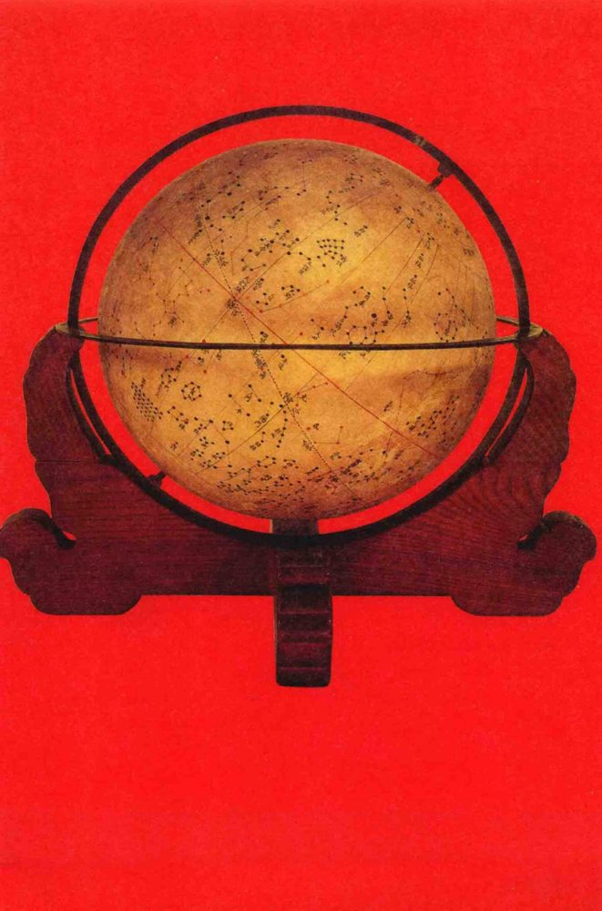
Study cues
- In the shou peach tree, which part must still be a character and which part can be branches?
- Why does the incense-smoke shou run from bottom to top? How does this differ from the stroke order you normally use to write shou?
漢字的誘惑
Scope. Chen Nan's book treats Chinese characters as a design system you can study: character lineage (zimai), character method (zifa) and character drawing (zihui), followed by her own cases such as Beijing Arts and Crafts, Tsinghua, Red Cross stamps and the Olympic "Hundred Family Surnames". It is about methods for designing Chinese characters. Emoji and ASCII-style character art also appear, but they are there to ask "what still counts as writing"; the book does not teach Latin typesetting.
Main ideas
- The character wen ("pattern, sign") leans towards pictographic images, while zi ("character") is the result of shape and sound reinforcing each other. From the start, Chinese writing layered meaning, sound and pictures in one system, which is why it offers so many design possibilities.
- When the medium changes, the look of the characters changes with it: oracle bones, bronze vessels, bamboo slips, paper, woodblocks, movable type, digital. Woodblock printing grew out of stone rubbings and seals, a different kind of production from the brush movement of calligraphy.
- The book treats draft cursive, wild cursive and regular script as different standardised solutions. Cursive is fast; regular script is upright. A design method should say which standard it is standing on.
- In Chen Nan's diagram, the character fu ("good fortune") shows wine offered to the gods in a prayer for plenty. Analysing the shape of a character serves design, and it also serves reading.
- Emoji and character art can already carry meaning. The book includes them so that you can see the boundary of writing shifting.
Methods
- Make a "lineage" card for one character: its earliest medium, how it changed after printing, and the medium you will use today.
- From the case studies, note only the constraints: stamps have a fixed size, badges are metal, logos get reduced. Write the constraints next to your sketches.
- If you use character art or emoji, state whether it works as text or as image in your piece.
- Do not use this book's six categories of character formation (liushu) to explain a logo built from Latin letters. The liushu are a method for Chinese characters.
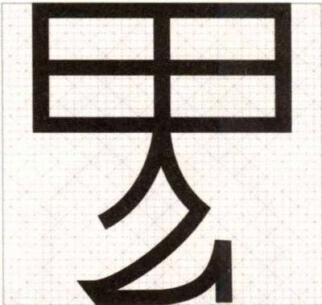
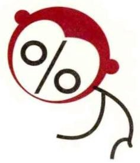
Study cues
- Using the difference between wen and zi, explain why designing Chinese characters cannot just mean drawing pictographs.
- Pick one of your own Chinese-character logos and write down the constraints of its medium (smallest size, material, what it will be printed on).
中國美術字史圖説
Scope. Li Mingjun writes a general history of "art lettering" (meishuzi): marks on pottery, pictographic inscriptions on bronzes, bird-and-insect script, decorative seal script, through to the Song-style art lettering of the Song, Yuan, Ming and Qing dynasties and the modern art lettering of the twentieth century. His definition is useful: art lettering is made beautiful for a particular medium, which sets it apart from everyday handwriting and also from calligraphy, which expresses feeling. Here the printed Song style is one stage in the history of art lettering, not the whole of a font-making tutorial.
Main ideas
- The name "art lettering" only became popular in advertising and publishing in the 1930s, but the thing itself begins with the pictographic inscriptions of the Shang and early Zhou.
- Bird-and-insect script served bronze vessels, seal script served roof-tile ends and seals, and the Song style served mass production from woodblocks. The medium decides the conventions.
- The Song-style art lettering of the Song to Qing dynasties is described as a new flower that printing technology brought into bloom. Its level horizontals and upright verticals grew out of the knife and the block.
- The bronze inscriptions from the tomb of the King of Zhongshan remind you that art lettering also appeared on the ritual vessels of the feudal states, not only on later posters.
- The book sets out to build an illustrated history with no missing links. When you read the plates, check the dates; do not just collect attractive strokes.
Methods
- Note four things for every illustration: date, medium, textual content, and which convention it follows (bird-and-insect, seal, Song style, modern art lettering).
- Use Li Mingjun's definition to check your own assignment: is it everyday writing, calligraphy, or art lettering made beautiful for a particular medium?
- When you copy Song-style art lettering, copy a piece of handwritten regular script at the same time, and write down the differences between knife and brush.
- Put twentieth-century advertising lettering in a separate group; do not place it on the same style board as bronze vessels.
Study cues
- In your own words, write down whom each of these serves: art lettering, everyday functional writing, and calligraphy.
- Why must Song-style art lettering be discussed together with woodblock printing, rather than simply saying "people in the past liked thin horizontals and thick verticals"?
漢字設計與應用
Scope. This is a catalogue of Chinese-character design work, grouped by flavour (classical, symbolic, logo-like, decorative), covering posters, books, records and commercial headings. The lineage of Wang Zhi-hong and Kan Tai-keung and the commercial typefaces of Julius Hui all appear near the contents pages. It shows you the spectrum of Chinese-character headings. The catalogue does not replace the standards for text typefaces, and it does not teach you how to set Latin letters.
Main ideas
- The grouping itself is a method: classical brush feeling, symbolic, logo-like and decorative are different standards of what "finished" means.
- The same line of poetry or the same shop name can be made by different people at completely different densities. When you compare them, look at the white space and the strokes, not just the subject.
- Commercial pages (the New York Times Chinese website, commercial typefaces) and literary posters (short stories, a zoo photo album) have different demands for readability.
- Large lettering in the environment, such as on Cantonese opera bamboo theatres or at Koshien, is written for people walking past, so the strokes must still separate into characters at a distance.
- The documentary exhibition of a Macau environmental theatre places the lettering inside the sentence "the city is the theatre". The lettering is the entrance to the exhibition, not a background texture.
Methods
- For each piece you look at, put it in just one of the four groups and write one sentence of evidence for your choice.
- Before copying, cover the decoration and ask whether the characters can still be read without the background pattern.
- When you make your own Chinese-character heading, first state the viewing distance: hand-held, wall, or building.
- For bilingual work, describe the Chinese page and the Latin page separately; do not wave them through with one phrase like "it looks designed".
Study cues
- Choose two pieces from the book and put one in "classical" and one in "symbolic". Point to one piece of stroke evidence for each.
- Turn your name into large wall lettering. With the colour covered up, which characters can still be told apart from three metres away?
十二生肖形意字
Scope. Heima Dashu ("Uncle Black Horse") turns a zodiac character design competition that began in 1989 into a textbook. There are twelve characters, which may be simplified or traditional and stacked or side by side, yet their imagery can be redrawn again and again. Kan Tai-keung, Choi Kai-yan and others served as judges. This belongs to a tradition of pictorial character assignments: the character must still be that character, and the animal must still have the posture the public recognises.
Main ideas
- There are only twelve characters, so the difficulty is not quantity but the accepted features of each animal. A rat should be light and small; draw it fat and most people will not nod.
- The structure can change, but recognition cannot be lost. The judges ask whether it "looks like this animal" and also whether it "is still this character".
- The competition ran from 1989 until the book was published, which shows that the same brief can be worked on for more than twenty years. The value of a type course lies in a stable brief.
- The book is both a portfolio and a course reader. The judges' comments are more worth copying than the prize-winning decoration.
- Pictorial characters sit on the border between heading and image. They are not twelve sets of text fonts.
Methods
- Write down three accepted features of the animal before you start drawing. The features come from the body, not from cartoon expressions.
- Test every draft on two people: one reads the character, the other names the animal. Both must get it right.
- Collect the judges' comments from the book, sort them into "posture", "structure" and "over-decoration", and use them to revise your drafts.
- Do not turn the twelve characters into twelve unrelated styles just to look like a competition entry.
Study cues
- Draw the characters shu ("rat") and niu ("ox"). Ask a classmate to name the animal within three seconds. For the one that failed, was the posture wrong or did the strokes fall apart?
- Why does this brief suit a whole semester rather than a single inspiration sketch?
書法字體設計技巧與應用
Scope. Liu Xin's book teaches how to bring the feeling of the calligraphy brush into modern commercial design: advertising, packaging, logos and books. In his foreword, Liu Hanxu of FounderType says it helps designers without childhood calligraphy training understand the techniques. Here calligraphy is treated as design material that can be analysed. This is different from Chiang Hsun's aesthetic essays, and different from building a Kai (regular script) font.
Main ideas
- The book first separates calligraphy as art from calligraphy as design, then looks at current uses and misuses in China, with Japan and Korea for comparison.
- Do not confuse the traits of historical calligraphy with calligraphic lettering in today's design. A design draft can learn from the movement of the brush, but it has to accept grids, reproduction and brand standards.
- The methods include personifying characters and making images and strokes share one form (isomorphism). Putting joy, anger, sorrow and delight inside the character kou ("mouth", a simple square) adds expressions within the empty space, and all four expressions must still belong to one style.
- The isomorphism of wang ("net") and yu ("fish") has to pass twice: you must see the structure of the character and also the basic shapes of a net and a fish. Substitution does not mean pasting a picture into a character.
- The cases are split into commercial and cultural or artistic work. Both can use calligraphy, but they serve different reading speeds.
Methods
- Add only one technique at a time: brush feeling, isomorphism or expression. After adding it, read the original sentence through once.
- When you make an isomorph, write two checks: can the character be read without the explanation, and can the object be named without seeing the character?
- Collect the misuses the book points out and make three counter-examples titled "do not hand in work like this".
- From the Japanese cases, borrow only "how calligraphy enters a product system", not the overall layout taste of the pages.
Study cues
- Make a kou ("mouth") and add only one expression. Without hearing any explanation, can a classmate both read it as kou and name the emotion?
- Choose one character and one object and make an isomorph. Which stroke must stay so that people can still read the character?
平面排版_基本的基本
Scope. This book trains your eye for layout; it is not about designing type. The questions are concrete: what makes text easy to read, type size and weight, vertical or horizontal setting, letter-spacing and leading, characters per line, page margins. It also explains halftone screens and resolution in printing. Here type is one setting within the layout. Both vertical Chinese and horizontal Latin setting appear, and the rules must be applied separately for each writing system.
Main ideas
- Layout starts with "looking consciously". If an image looks too low, move it up; if you move it too far, bring it back. The judgement comes from the eye, not from a slogan.
- Readability is a whole set of decisions: typeface, size, weight, colour, vertical or horizontal, letter-spacing, leading, line length, lines per page, background colour, surrounding white space. Readers do not notice these because someone has dealt with them.
- An unconventional layout can appear now and then. If every page is shouting, long texts lose the regular order that lets the reader rest.
- Cropping a picture and moving in close on objects tells the reader "look at these". Emphasis is a layout decision, not making every word bold.
- In printing, separate screen ruling (lpi) from resolution. 175 lines and 90 lines are two levels of precision, not two filters.
Methods
- Take a page of long text that you find hard to read and change only the line length and leading, nothing else. Read it aloud to a classmate and note where they pause.
- Practise "looking consciously": on an existing poster, mark what you see first, second and third.
- Do not use the same line-length numbers for vertical Chinese and horizontal English. For each, find an example you can read to the end and use it as your benchmark.
- Before sending files to print, write down the screen ruling and the image resolution and check that they match.
Study cues
- Set a 200-character passage at "ten characters per line" and at "thirty characters per line". Which version is easier for you to finish? Where did the white space help you?
- Mark the first thing you see on your own poster. If it is not the object you want to emphasise, will you crop and enlarge, or make the title even bolder?
Tokoy TDC VOL.28⭐
Scope. This is the 2017 annual of the Tokyo Type Directors Club (the title is scanned as "Tokyo TDC"). It contains posters, typefaces and experimental work selected by the jury, plus a member directory. Use the annual to train your eye: see what the jury counts as typographic design. It is not a step-by-step textbook. Kanji, kana and Latin letters take turns as the lead in different pieces, so note which one for each piece.
Main ideas
- The TDC Prize and the RGB Prize are different routes in. Abbott Miller's RGB Prize shows that type on screen also falls within the judging.
- Work pages usually list the designer, the client and the typefaces used. Reading the annual means reading these credit lines, not just looking at the big images.
- One volume can hold the density of news headlines as well as a title like SHIBUYA Last Dance, which takes a place name apart and puts it back together.
- The judges come from different cities. A piece being selected means it stood up to that year's standards, not that it is a timeless template.
- The directory is long, a reminder that this is an industry's annual gathering, not one person's style book.
Methods
- Write three lines for each selected piece: the writing system (kanji, kana, Latin or mixed), whether the type is information or material, and what you can borrow, which is only ever the structure.
- Note the prize name whenever you see one. Do not put RGB and print categories in the same reference group.
- When copying, copy only the skeleton and the hierarchy, not the illustrated surface of the whole page.
- After using the annual, make a page called "effects I will not imitate this year", so you do not mistake fashion for method.
Study cues
- Choose one prize-winning piece and write down its writing system, and whether the type in it is read or seen as an image.
- RGB Prize or print poster prize: which viewing distance should your assignment be designed for?
排版的風格
Scope. Zuo Zuo's book puts "what is typography" back into the stylistic history of the twentieth century. One focus is Jan Tschichold, from 《新排印》 to the classical standards he later drew up for Penguin. The book also touches on Chinese covers from the same period, such as Qian Juntao's 1949 《西洋美術史》. It is about layout styles. Type design and art-lettering techniques appear only where a style needs them.
Main ideas
- Tschichold's later Penguin rules are specific: a format close to the golden ratio, only different weights of Gill Sans for the title and author, a short red rule in the middle, and colour to tell subjects apart.
- The text face changes with the kind of book: Garamond or Caslon for music scores, Bembo for Shakespeare, Bell for poetry. A style is a set of decisions, not one typeface used for everything.
- Word spacing in Latin text should be tight, and you can judge it by the thickness of an i; a line holds roughly eight to twelve words; the first paragraph after a heading is not indented, and later ones are indented 1em. Chapters, sections and subsections use different cases and italics.
- Old-style figures and lining figures must not be mixed. These are rules for Latin type. A Chinese cover can learn from the short red rule and the zoning, but not from the word spacing.
- Another style packs text so densely that it becomes a plane, while the details of a large picture become points and lines. Point, line and plane can swap roles. This is a contrast created by the layout, not a property of a font file.
Methods
- Use Tschichold's Penguin rules to lay out a small book cover: one sans-serif, one short rule, two levels of information.
- Lay out another page of classical body text and check only: word spacing, whether the first paragraph is indented, and whether italics are used for titles or for emphasis.
- When you look at old Chinese covers, write down which kind of zoning they borrowed, and whether the characters themselves are Song style, art lettering or calligraphy.
- When you experiment with "text as plane", first make sure there is still one place where the title can be read.
Study cues
- Following Penguin's logic, set the titles of three books. How many weights and how many colours did you use?
- Why can a poetry collection and a music score use different text faces? Give one reading-related reason for each.
字體設計的規則與藝術
Original title: Designing Type
Scope. This is a book on designing Latin letters, explaining the rules letter by letter: serif capitals, serif lowercase, sans-serif, numerals, punctuation, spacing and kerning. The contents run from O, E and S all the way to g, a and quotation marks. The radicals and strokes of Chinese characters are not part of this set of rules. Before you use it for a Chinese heading, admit that you are borrowing the eye of the Latin alphabet, not the structure of Chinese characters.
Main ideas
- Letters have parts, an x-height and an axis of stress. In a Didone or a slab serif, the O has a different axis and different terminals from a Venetian face.
- The terminal of c has to help close the opening of the counter so that the light and dark balance. That is why Venetian faces such as Guardi make the terminal relatively large.
- You can think of S as two ellipses with matching curvature and axis. If the two ellipses are not from the same family, the S will lean to one side.
- Sans-serif is not serif type with the serifs shaved off. The capitals O, E, S, C and G have a different set of widths and apertures in a sans-serif.
- Spacing gets its own chapter: the safe space around letters, word spacing, figure spacing and kerning. Letters that are drawn accurately but spaced loosely still do not make a typeface.
Methods
- Draw only three letters a week, in the book's order: O and E first, then S. When you finish, overlay them and check the axes.
- When you draw c, mark the terminal and the counter. If the terminal is too small, redraw it; do not add decoration to make up for it.
- Check spacing with a test word such as "Hamburgefontsiv", not with your own name, which will only make you feel good.
- Check the figure 0 against the letter O, and the figure 1 against the letter I, on the same line.
Study cues
- Draw a serif c and a sans-serif c. Which one relies more on its terminal to close the opening?
- Write down the axes of the two ellipses when you draw an S. If the axes do not match, which way will the S lean?
Tokoy TDC vol.29⭐
Scope. This is the next Tokyo TDC annual: again prize-winning work and a member directory, plus a type design prize. The work ranges from lines of poetry, shop greetings and Christmas to posters for the 21st Century Museum of Contemporary Art, Kanazawa. Use it like any annual: look at the selection, do not memorise steps. Note which script each piece uses.
Main ideas
- The type design prize and the graphic application prizes sit side by side. A new typeface and a poster set in existing type are not judged on the same thing.
- The Kanazawa museum poster uses Akzidenz-Grotesk, Yu Gothic and Yu Mincho together. This is a collaboration of a Latin sans-serif, a Japanese gothic and a Japanese Mincho, and each of the three has its own job.
- Notebooks, seasonal phrases and shop thank-you messages show that the annual contains a great deal of "shaping everyday sentences", not only shouting headlines.
- A haiku by Matsuo Basho is also set as a piece of work. Classical lines can become material for typographic design; what matters is whether the layout lets the lines be read.
- The book also has experimental multilingual pages. When you cannot read the language, look even harder at the hierarchy: which line is the title, and which is the text.
Methods
- Choose five pieces and note the typeface names (if the page gives them) and the writing system.
- When you see a poster using three typefaces, write one sentence for each: does it carry the title, the information, or the mood?
- Keep "new typeface prizes" and "typesetting prizes" in two separate folders.
- Before imitating, reset the piece once with the name of your own city and check whether the method still holds.
Study cues
- Why does the Kanazawa poster use a sans-serif, a Japanese gothic and a Mincho at the same time? Guess the job of each.
- From this volume, choose one "everyday sentence" piece and one "experimental page". From which one can you borrow the hierarchy, and which one can you only admire?
字體呈現3⭐
Scope. The third volume of 《字體呈現》 is an annual catalogue of Chinese-language typographic design plus interviews. The interviewees include Hei Yiyang, Kan Tai-keung, Tommy Li, Shen Haopeng, Zhou Xiaoliang and Chen Rong. The work is divided into logos, posters, experimental type, text typefaces and theory. Experimental posters and text typefaces that can set a book are two separate categories in the contents, so do not merge them into "it's all type design" when you read.
Main ideas
- The interview questions are a course in themselves: how do you teach Chinese type, what makes Chinese type difficult, how do Chinese and English type differ within a brand, which book would you recommend.
- Zhou Xiaoliang talks about the key visual for the Tokyo TDC annual awards and also about building brands in Macau. When the region and the client change, the job of the type changes.
- Interviews such as those with Shen Haopeng and Chen Rong place type back in graphic design education and urban practice, not only inside type foundries.
- The logos in the catalogue (Techanhui, Fengyun, Yilaiyun) are identities made of a few characters. Judge the finish of the experimental type pages and the text typeface pages separately: the first can be a proposal, the second has to be usable.
- Theoretical research has a chapter of its own, which shows that the series wants work and argument side by side.
Methods
- Read one interview and pull out only three sentences you can act on; do not note down the biography.
- First put your own work into the book's categories: logo, poster, experimental, text typeface. If it does not fit, change your description.
- For a bilingual brand, answer the interview's question again yourself: what must the Chinese and the English each keep?
- When you look at the text typeface pages, find body text and try reading it; do not just look at the large display characters.
Study cues
- Using the book's categories, label three of your assignments from last semester. Which one was really an experiment that you handed in as a text typeface?
- When Chinese and English sit side by side in a brand, will you let the two scripts share one weight, or give each its own identity? Write one reason.
字體設計基礎
Scope. This is an older textbook on Chinese art lettering in the People's Fine Arts Publishing House tradition. It begins with legibility, artistry and ideological content, then covers Song, Hei and rounded Hei styles and rules such as "tight top, loose bottom", and only at the end turns to decorative variation. It trains hand-drawn display lettering. Ideological content was a requirement of textbooks from that era. It does not cover OpenType, nor the counters of Latin letters.
Main ideas
- Three principles stand side by side: it must be readable, it must have form, and it must have something to say. Decoration that cannot be read does not count in this textbook.
- The story of the Song style is told as the result of knife and block: thin horizontals, thick verticals, a square shape, from Song-dynasty book carving to the Ming style of the Ming dynasty. Once Fangsong appeared, the original Song style became known as "old Song".
- Hei and rounded Hei have their own features and rules. "Tight top, loose bottom" is the basic way to handle the visual centre of gravity of Chinese characters, not a personal style.
- The book separates the kinds of cursive: draft cursive is still usable, while wild cursive has lost its reading value and is mainly for appreciation. A design course should know which one it is borrowing.
- Decorative methods can be combined, but once the composition is fixed you should practise until it flows, and stop when the details satisfy you. Do not revise forever.
Methods
- Write ten characters following the rules of the Song style; check only the horizontals, verticals and the central space (zhonggong), and add no decoration.
- Allow one kind of decoration only on the next sheet. Keep one sheet from before and one from after, and see whether legibility has dropped.
- When you practise "tight top, loose bottom", fold the character in half top to bottom and check whether the visual centre sits slightly above the geometric centre.
- Rewrite "ideological content" in today's terms: these few characters should let people know what position you are arguing for. Write the position first, then the characters.
Study cues
- Write the character yong ("eternal", the classic character that contains all the basic strokes) once in Song style and once in Hei style. Which stroke best shows that the two follow different rules?
- Before decorating your title, write one sentence stating the position it should let people read. Does the decoration block that sentence?
【會員專供】中國近現代字體應用文獻展
Scope. This is the catalogue of the documentary exhibition within "Typography in China". The exhibits run from the late Qing to the end of the twentieth century: about five hundred books and periodicals, more than one hundred and fifty books on art lettering, and a large amount of printed ephemera and manuscripts. The text explains how art lettering moved from traditional decoration to the commercial lettering of the 1920s and 30s, then through the paper shortages of the war against Japan, to simplified characters and the change of tools after the reform and opening-up. It is evidence of applied history, not a source of pages to imitate as typefaces.
Main ideas
- From the mid-1920s, commerce and new publishing made decorative lettering flourish; in the 1930s, influenced by the language of Western modern design, literature, theatre, film and advertising all used lettering as their main decoration.
- From the war against Japan to 1949, materials were scarce, yet coarse local paper still carried the lettering of its time. Scarcity itself was a condition of the style.
- Threads after 1949 include the craze for learning art lettering, simplified characters, and later computer tools. In each period, "looking good" answered to the technology of the time.
- The exhibits are called documents because they record how Chinese characters were printed, and how covers and slogans looked, at different stages.
- The exercise books and quotation-style lettering of the late 1960s show how political sentences became lettering on everyday paper goods. Look at them as applications; do not treat the quotations as rules.
Methods
- For each exhibit, record only the date, the printing method and the job of the lettering on the cover (title, slogan, decoration).
- Pin up 1930s commercial art lettering and 1960s slogan lettering separately. Do not blend them into one "retro" look.
- When you look at coarse paper and coarse-screen printing, write the limits into your notes: why were the characters drawn so heavy?
- When you quote exhibits on your own cover, state whether you are borrowing the layout or the stroke shapes, and handle the historical context of the original text with care.
Study cues
- Choose two exhibits at least thirty years apart. What technology or use pushed the stroke weight of each?
- If you borrow 1930s art lettering for a new cover, what must you change so that it is about your brief rather than an imitation of the old?
【會員專供】文字設計在中國邀請展
Scope. This is the catalogue of the China TDC invitational exhibition. The work is mostly contemporary Chinese-character design, with some bilingual layouts. A short essay by Ma Quan defines writing as the visualisation of language: when the letterforms change, the form of communication changes. Use the catalogue to build a view of "how people design Chinese characters now". The high finish of an invitational show does not mean every page is a font; much of it is still one-off lettering for posters and books.
Main ideas
- An invitational exhibition puts individual work into public selection. When you look, find the credit lines: who designed it, and which category (layout, book, poster) it belongs to.
- Ma Quan stresses that changes in letterforms follow the thread of civilisation. For students, this means your choice of typeface is also a historical position, not pure decoration.
- Chinese characters in the exhibits often appear alongside Latin letters. When they sit side by side, check the size and baseline of each separately.
- Book design pages (for example the layouts by Ma Shirui) show the hierarchy of type across long pages, which differs from the single blow of a poster.
- The English pages of the catalogue are the exhibition's outward-facing text. Judging the Chinese work still comes back to whether the characters can be read.
Methods
- For each piece, note whether it is one-off display lettering or a typeface that can be reused.
- On bilingual pages, use a ruler to compare the visual size of the two scripts; do not trust that the same point size means the same size.
- Choose three pieces whose structure you are willing to learn from, and for each write down one surface effect you will not learn.
- When reading the introduction, rewrite "writing is the visualisation of language" in one sentence of your own and give an example from one of your assignments.
Study cues
- Choose one poster and one book spread from the catalogue. In which of the two must the type be read within one second?
- In your bilingual assignment, which is shouting, the Chinese or the Latin? Change the size of the other one by one step and look at the balance again.
【會員專供】超語境國際文字設計論壇
Scope. This is the record of an international forum. The Chinese thread is "the way of the archaic and unpolished" (gu zhuo), about the origins of writing and how to train in it; alongside it are Lucas de Groot's Latin typefaces, Masayoshi Kodaira on creating a new identity, and Korean designers on type as language. The forum's value lies in placing these side by side. Once they are side by side, you still have to separate them: gu zhuo is a path of practice for Chinese characters, while de Groot's work is family design for the Latin alphabet.
Main ideas
- "The way of the archaic and unpolished" points practice back to the sources of writing, rather than chasing software effects first. It is a learning attitude in Chinese design.
- Lucas de Groot stands for another profession: building complete Latin type families to serve brands and multilingual typesetting.
- Masayoshi Kodaira's topic is "creating a new identity". An identity can come from type, but a new identity needs a client and a system; it is not a single poster.
- The Korean speakers call type a language. The "languages" of different writing systems cannot share one set of stroke metaphors.
- Much of the scanned text layer in this volume is fragments of English, so rely on the speakers' titles and the images when reading.
Methods
- After hearing or reading each speaker, write only: which script they deal with, and whether their output is a family, an identity or an attitude.
- Turn gu zhuo into an exercise: copy ten old characters you find plain and unpolished, then explain whether the medium you use today should keep that kind of bluntness.
- When you look at de Groot's work, count the weights and widths; do not just say "international".
- Do not turn the three threads into one mixed-style mood board.
Study cues
- In one sentence each, explain what is delivered by the way of the archaic and unpolished, by a Latin type family, and by a new brand identity.
- Which speaker's output is your latest assignment closest to? Which part of the finished work is your evidence?
世界文字發展史_11407704
Scope. This is a world history of writing, organised into primitive scripts, classical scripts and alphabetic scripts, and it uses the "three aspects", the six categories (liushu) and the three categories (sanshu) to compare different systems. Chinese characters, Yi script, Maya script, the Aramaic alphabet and the Indic scripts all sit on the same map. It explains how writing systems are born and spread. Stroke weight, fonts and art lettering are not among its questions.
Main ideas
- Writing has three aspects: form, sound and meaning. If you look only at form, you will mistake both alphabets and Chinese characters for "pictures".
- The six categories are compared with the three great classical scripts: pictographs, simple indicatives, compound ideographs, phonetic loans, phono-semantic compounds and derived characters, each with points that can and cannot be compared. The three categories are a further generalisation.
- The birth of the alphabet is described as an ordinary yet momentous event. The two great alphabet families, Aramaic and Indic, explain how many of Asia's phonetic scripts are related.
- The sphere of Chinese-character cultures has risen and declined. The several scripts of the Lisu people (a missionary Latin alphabet, a syllabary based on Chinese characters, a new phonetic script) show that one language can use different systems over time.
- Local traditions such as the Shui script record the calendar with signs in the style of Chinese characters. Having few signs does not mean it is not the work of writing.
Methods
- For any script you are going to design, first mark the three aspects: is this piece mainly playing with form, sound or meaning?
- Draw a very small world map marking only the three scripts you will meet this semester, and whether each is logographic, syllabic or alphabetic.
- Do not use this book to pick "strange letters that would make a logo". First confirm which system the letter belongs to.
- When reading the comparison of the six categories, note only one Chinese example and one non-Chinese counterpart for each category.
Study cues
- Use the three aspects to explain why you cannot call both Chinese characters and Latin letters "graphics".
- What do the three Lisu scripts remind a designer of? One language is not the same as one typeface.
今日字體
Scope. This book puts interviews from today's type industry together with basic knowledge. The interviewees include Production Type, Hanyi and Jiyu-Kobo. Only the later section, "Understanding Type", goes into x-height, baseline, stems and terminals. The interviews cover both the digital reality of Latin type founding and the needs of Chinese and Japanese text typefaces. Keep separate notes for the two industries.
Main ideas
- Jiyu-Kobo looks back: before the 1980s, type was locked up in printing works; after desktop publishing, the number of people handling type suddenly grew, and the barrier to making digital fonts fell.
- Metal type has weight, so families could not grow without limit. Digital type has no such physical cost, and reviving old metal type became easy too. Sheer quantity is a feature of this era, not proof of quality.
- OpenType hands substitutions and positioning, once decided by the compositor, back to the font file to handle automatically. Typesetting gains more freedom, and depends more on whether the file itself is made correctly.
- Interviews such as the one with Hanyi discuss what kind of text typefaces are still needed. The standard for a text face is comfort over long reading, not the expression of a headline.
- The applications section also has the opposite case: using a stock font such as MS Gothic, photocopied and then scanned, to make something deliberately cheap and worn. That is a concept, not how text type is handled.
Methods
- Split your interview notes into "industry facts" and "design advice". The facts help you understand licensing and tools; only the advice is for trying out.
- When learning the parts of Latin letters, use the baseline and x-height diagrams at the back of the book, not the Chinese practice grid with its cross and diagonals.
- If you make a "cheap and worn" concept draft, state which kind of print damage you are imitating, and make sure the sentence can still be read.
- When choosing a text typeface, set a full page before judging; do not just look at single-character specimens.
Study cues
- Why were type families in the age of metal type smaller than those in today's font shops?
- With the same typeface, what treatment turns it into "deliberately cheap", and what treatment suits long texts?
創意字體設計與製作-www.afx365.com
Scope. This is a book of software templates for Chinese art lettering, with chapters organised by commercial phrases for brands, shopping malls, property and so on. The steps use the pen tool, anchor points, paths and ready-made PSD files. It teaches how effect files are produced. Stroke construction, Chinese text typefaces and Latin letter standards are not part of it. Templates can save time, and they can also make every shopping mall look like it came off the same CD.
Main ideas
- Each chapter first gives the "visual concept" of one kind of commercial art lettering, then hands-on steps, and finally a template you can apply. The concepts are very short; the steps take up most of the space.
- Pen-tool anchor points and handles are a means of production. More anchor points do not mean the structure of the character is right.
- Most example phrases are promotions and property developments: "Gifts that never stop", "Fengya Mingyuan", "Fall in love with poetic living". The function of these phrases is to shout, not to be read.
- The book comes with a CD path. The files are the look of the finished product, and the skeleton of the characters is often already welded into the effect.
- When you use it as a reference tool, you have to add your own readability check. The book's steps will not do that for you.
Methods
- Before applying a template, set the phrase straight in a Hei typeface and confirm that every character is correct and separate.
- Add only one layer of effect. After adding it, shrink the file to its actual size and look at it once.
- Keep anchor-point practice separate from design practice. Anchor points train the hand; design hands in the hierarchy of the phrase.
- Do not mistake the gloss of a PSD for a type family. If the client wants to reuse it, you need to make a separate solution that can be typed.
Study cues
- Choose one template and remove the shadows and textures. Does the remaining character structure still stand up?
- If this property development's name will later appear at a hundred sizes, would you hand over the template file or a real font file? Why?
國際平面設計基礎教程-TYPOGRAPHY字體設計
Original title: Basics Design 03: Typography
Scope. This is a beginner's course in Latin typography, with chapters running from reading letters, classification and typesetting to making type, production and application. Its classification uses textbook-style labels such as Modern, Handwritten, Zapf Chancery, Futuristic and Eurostile. Eric Gill is quoted to separate letters from pictures. Chinese characters appear only for comparison. In this book, "handwritten" is a category of Latin type, not Chinese art lettering.
Main ideas
- Many terms come from stonemasons. You learn words such as serif and counter so that you can discuss the same thing with others, not just to memorise vocabulary.
- Gill said that letters are not pictures. Typography studies how letters are arranged in design, usually tied to the purpose of printing.
- Type reveals the attitude of whoever drafted it. A restaurant hanging a scrawled handwritten menu outside may be read as "this changes daily", or as careless. The setting decides the reading.
- The poster for the Apocalypse exhibition fills in the insides of the letters to suggest something ominous. Filling the counters is expressive, but it also costs some legibility.
- In the climate action example, the headline and the section headings use the same typeface, and colour separates the levels of the text. A hierarchy does not always need a change of typeface.
Methods
- Use the book's categories to label ten Latin typefaces on your computer. For those that do not fit, note "textbook categories not enough".
- For each poster you look at, write one sentence: is the type informing, or performing the attitude of whoever drafted it?
- Before filling the counters, keep a version with open counters and compare whether the words can still be recognised from a distance.
- Use two colours of one typeface to build layers, as an exercise in "using one typeface fewer".
Study cues
- Using Gill's words, explain whether your poster's title is made of letters or of pictures. What is your evidence?
- Without changing typeface, use only colour and weight to split a passage of Latin text into heading and body. Can a classmate point to the entry point?
字型之不思議
Author: Akira Kobayashi
Scope. In short essays, Akira Kobayashi looks at the curiosities of Latin letters in trademarks, magazines and cities: Louis Vuitton, GODIVA, copperplate script, Dyson, the Louvre, Plantin in Bath, the disappearing German blackletter. The Traditional Chinese edition introduces these essays to Chinese readers. These are observation notes on Latin type. Chinese characters in trademarks fall outside the methods of these essays.
Main ideas
- The capitals on Trajan's Column have classical proportions: wide letters are wide and narrow letters are narrow. Simply opening up the letter-spacing will not automatically create "grandeur". Trajan (Carol Twombly, 1989) brought these proportions into digital type.
- The GODIVA trademark changed from Times capitals to Trajan, and later kept Trajan's skeleton while removing the serifs. Only by putting the three side by side can you see what "Roman inscription proportions" and "modern sans-serif" each contributed.
- The same default typeface feels completely different in an email and in a documentary. The setting rewrites the meaning of the type.
- German blackletter, French script and Plantin on English streets are local typographic landscapes. They are being replaced, which makes them all the more worth recording in photographs.
- Do not change a trademark casually. Before you change it, know which typeface the original is and what era it comes from.
Methods
- Choose a Latin trademark you know well, find its likely typeface ancestor, and line up three stages: old, current, your revision.
- Allow your revision to change only one thing: proportion, serifs or letter-spacing. Change all three at once and you will not see the lesson.
- Put the same typeface into two settings (a receipt, a poster) and write down how the feel differs.
- When you see a blackletter or script trademark, first decide whether it still needs to be read quickly.
Study cues
- Set "SENATUS" in Trajan and in Futura. Which one's contrast between wide and narrow letters is closer to the inscription? Which letters do you judge by?
- After GODIVA dropped the serifs, what of Trajan did it keep? If the proportions were changed as well, what would be left of the trademark?
字型之不思議 小冊-手寫
Scope. This slim booklet is not by Akira Kobayashi; it is Wang Zhi-hong's landscape of handwritten lettering. He photographed lettering on the street for Instagram, and the English captions were written by Grace Chang. The booklet treats "the scenery of letters" as a source for design and for life. The photos show Chinese characters, Latin letters and all kinds of handwriting together. Separate your notes by the writing system in each image, and do not read the booklet as a follow-on chapter of the main text of 《字型之不思議》.
Main ideas
- Wang Zhi-hong treats living street lettering as nourishment for his work. Photographing is itself the method: first see, then decide whether it should become design.
- The booklet has very little text, and the credit line names the camera and the author. It is slim because it is a companion for the eye, not an argument.
- The value of handwritten lettering lies in its setting: shops, walls, temporary notices. Take it out of the setting and only trace the letterforms, and you lose the reason for this booklet.
- His book design career (series such as INSIGHT and SOURCE) shows that these photos eventually return to layout and publishing, rather than stopping at a collecting habit.
- Compared with Akira Kobayashi's street observations, this booklet is more personal and depends more on continuous everyday photography.
Methods
- For one week, photograph three pieces of "handwritten lettering still in use" every day, noting the city, the material and the rough reading distance.
- Next to each photo, use two words to label the writing system and the tool (pen, paint, chalk).
- When you develop one photo into a design, write down which part of the setting you kept: the speed, the material or the sentence.
- Do not mistake a filter's colour tone for a method of lettering.
Study cues
- What way of looking at lettering does this booklet teach you, and what way does the main text of Akira Kobayashi's 《字型之不思議》 teach you?
- Choose a handwritten shop sign you photographed. If the lettering were replaced with a computer font on the same wall, would you lose the letterforms or the setting?
字體呈現-Q
Scope. This is the 2016 《字體呈現》 annual. The editors explain that Chinese-speaking designers once had strong art-lettering skills, that the hand skills were broken for a time after computers spread, and that only in recent years have Chinese characters been taken seriously again as a threshold. Zhu Zhiwei's preface sets out three standards for practical typefaces: traditional calligraphy, current fashion and the needs of users. The book contains logos, posters and text typefaces together. Read by category, so that you do not judge Tommy Li's commercial logos and a text font by the same idea of "finished".
Main ideas
- Zhu Zhiwei argues that type which only solves problems is not enough; it must also move people. Yet type that moves only a few people is not practical enough. All three must be present, and there is no shortcut.
- The editors link Republican-era art lettering, post-1949 propaganda posters and the later break caused by computers into one story. The annual is one showcase of this "regathering".
- In his interview, Tommy Li describes his work in very commercial terms: solving problems for clients, not acting as an artist shooting arrows at random. The HKPC identity is an example of this attitude.
- FounderType YouHei and Zhu Zhiwei's practical typefaces represent the font-library route. Work such as the Qinghewu teaware is display lettering for brands and objects.
- The book was willing to come out late rather than give up quality. That is an editorial attitude, and it can also be an attitude to making type.
Methods
- Check your next typeface against Zhu Zhiwei's three standards: which aspect of calligraphy, which aspect of fashion, which user action.
- For commercial projects, write down the client's needs first, then decide on the strokes. If you cannot write the needs as a sentence, you are not ready to start drawing.
- Divide the work in the annual into "typefaces you can type with" and "lettering drawn only for this one piece".
- When reading the historical sections, write down what your generation is more likely to lack: hand skills, or real-use situations.
Study cues
- Write one sentence each on "calligraphy, fashion, users" to assess your latest Chinese-character logo. Which is the weakest?
- If the client's needs clash with the personality you want to express, which side would you change first, according to the commercial interview in this volume?
字體呈現二（完整）
Scope. The second volume continues to present Chinese-language typographic design through interviews and work. A recurring line is: give readers more care through type; before designing, ask what this typeface should express and what reading problem it should solve. The interviews go into the experience of the generation from the Shanghai Printing Technology Research Institute. The work pages include titles such as "Symphony of Smart Making" and "Reading the World with a Child's Heart". In this volume, look separately at the care shown by text type and the identity carried by display type.
Main ideas
- Type is compared to a vessel: it must record and transmit, and it also carries beauty. Both function and beauty have to change with life; they cannot stay fixed in some golden age.
- The order of making type is given as: first understand why you are making it, then observe, then persevere. Letterforms without a goal have no vitality.
- Headings and text are placed in dialogue. The size, weight and personality of the two kinds of type should not compete for the same job.
- The interviews (with the Research Institute generation such as Xu Xuecheng and Qi Li, and with Liu Xiaoxiang on book design) provide industry memory: political assignments, collective type-making, and later individual practice.
- "Caring for readers" is the test. If a highly individual heading makes the text harder to read, the dialogue is not yet complete.
Methods
- For each piece, first write a goal sentence: "The reading problem this typeface solves is..." If you cannot write it, treat it as an experimental draft, not a typeface draft.
- Do a two-layer assignment: a set of display characters, and a passage of text set in a text typeface. See whether they are in dialogue.
- When reading the interviews, note the way of production: was it done by one person, or by dozens working on Song and Hei styles at the same time?
- On the book design pages, look at the type area and the hierarchy; do not just crop the big characters on the cover.
Study cues
- For the type you are working on, write one sentence on "the reading problem it should solve". If all you can write is "looks good", you have not yet stated the problem.
- Make one version as a heading and one as body text. Which one is shouting, and which one keeps the reader company to the end?
字體呈現小冊一
Scope. This booklet collects interview extracts from 《字體呈現》, with Chinese-character designers who came out of the Shanghai Printing Research Institute and the type matrix factories. Topics include the difference in centre of gravity between Chinese Hei and Japanese gothic, how the Hei Yi typeface was redrawn, how metal type was cut with a knife, and why innovation is hard in text typefaces. This is an oral history of the craft of Chinese text type. Do not read it as a talk on calligraphic creation, nor as rules for designing Latin letters.
Main ideas
- The interviewees compare Chinese and Japanese gothics: the centre of gravity of Japanese gothic sits low, so when they made Chinese Hei they used "tight top, loose bottom", a judgement many companies later followed.
- During the Cultural Revolution, designers were sent down to type matrix factories, where they cut the smallest sizes into lead with a knife. Japan already had matrix engraving machines by then. The tools set the limits of stroke shapes in that era.
- When redrawing Hei Yi, they saw the enlarged old metal type as having round ends, even horizontals that dipped inwards, so they extended the starts and ends of strokes up and down, creating what was later called the "trumpet mouth", to make the Hei style full and square.
- A typeface is not one person's work. At the peak, thirty or forty people worked on Song and Hei styles at the same time. Team leaders included Xu Xuecheng and Zhou Jincai.
- The difficulty of text typefaces is described as "how to innovate": turning old things into new type that still works, rather than chasing the strange.
Methods
- Look at the ends of the horizontal strokes of a Hei typeface with a magnifying glass, and write down whether they are rounded, flat or trumpet-shaped.
- Compare the visual centre of gravity of a Japanese gothic and a Chinese Hei, and mark "the heaviest area" on each.
- When you read about collective production, grade your own display-lettering assignment separately from "forty people making one typeface".
- Innovation exercise: fix just one flaw in an old Hei typeface and leave all its other rules unchanged.
Study cues
- Why does Chinese Hei need "tight top, loose bottom" instead of simply copying the centre of gravity of Japanese gothic?
- What printing or metal-type flaw is the trumpet mouth correcting? Draw it with a single horizontal stroke.
字體呈現小冊二
Scope. The second booklet continues to interview contemporary Chinese-character designers: differences between studying abroad and studio work, how a grounding in calligraphy enters typefaces, and two modes of production, assembling characters from components and writing each character individually. Cases include the logo for "Norway in China". Here calligraphy is one inner source. Applying the outer shapes of Western type directly to Chinese characters is described as merely borrowing from outside.
Main ideas
- The interviewees distinguish two approaches: assembling characters from components and then fine-tuning by stroke count, which is the current mainstream and has the advantage of consistency; very few people draw each character individually.
- Calligraphy can provide spirit and rhythm, not just outer shape. The other route is to translate the formal language of Western type into Chinese characters, which is still borrowing from outside.
- "Norway in China" uses a cliff, snowy mountains and a boulder wedged between rock faces to make a pictograph of "opening the door", discussed together with ink painting and the character men ("gate", drawn as a pair of door leaves). The final version was settled over several meetings.
- Type makers talk a lot about the long haul and loneliness. Choosing the trade is part of the method: only by staying in it can you make type that stands up to scrutiny.
- The difficulty of text type, views on Japanese typefaces and the plans of freelance designers all point to one thing: a Chinese typeface is long labour, not a poster.
Methods
- Make the same word in two small samples: a component-assembled version and a character-by-character written version. Write down which is more consistent and which gives each character more expression.
- If you borrow from calligraphy, state which aspect of its spirit you are borrowing (speed, centred brush tip, wet and dry ink); do not paste in a whole photo of brushwork.
- For a logo project, keep meeting notes: at which meeting was the pictograph pulled back into a character that can still be read?
- When borrowing Western forms, list separately "the strokes Chinese characters sacrificed to fit the Latin shape".
Study cues
- Which suits a Song-style text typeface better, component assembly or character-by-character writing? Give one production reason.
- If "Norway in China" kept only the cliff illustration and removed the character structure of men ("gate"), would it still be type design?
字體怡人
Scope. This is a book of type case studies from the Japanese design context. The Chinese edition divides the content into "memorable logotypes" and "expressive text type". The logotype chapter is grouped into grid, curve, asymmetry, melting, distortion and likeness. The book also reminds you that corporate identity needs efficiency (easy to read, easy to remember, able to extend), while titles for books and posters put emotion first. It treats the grid of Chinese characters and the lowercase of Latin letters as two kinds of skeleton.
Main ideas
- Since clerical script, Chinese characters have mostly been organised by horizontals and verticals, so starting from a grid is relatively easy. But relying only on the grid makes it hard to produce anything new.
- Latin capitals are closer to a grid, while lowercase is closer to hiragana, with more curves and circles, so the design difficulties are different.
- The Hozenji lettering extends its horizontals, while the Rinpa lettering puts its centre of gravity right in the middle of the square. Both use a grid, but when the centre of gravity changes, the impression changes.
- A book series can push the shape of its key visual (a diamond, an ellipse) into the dots within the lettering. The dots should follow the system, not change shape at random.
- Three-dimensional lettering on matchboxes (2002, Japan Match Industry Association) turns the letters into boxes while leaving room for imagination. Titles can have volume; text type has to return to reading.
Methods
- When making a Chinese-character title, draw the grid first, then decide whether the centre of gravity sits in the middle or slightly high. Put the two options side by side.
- If the work uses Latin lowercase or kana, find separate references for curves; do not reuse the horizontal-and-vertical grid of Chinese characters.
- In a series design, let only one component (the dot, the end of a horizontal) echo the key graphic.
- Write one sentence of priority each for a corporate logo and a poster title: extension for the first, emotion for the second.
Study cues
- Why does the book say that Chinese characters are easy to start from a grid, while Latin lowercase is harder? Point to one kind of stroke for each.
- Choose a key graphic (a circle or a diamond) and change only the "dots" in your title. Keep all other strokes readable.
字體設計100+1
Scope. This book teaches a type course through more than a hundred exercises, from single strokes, optical illusions, the six categories of character formation (liushu) and the nine-square grid to the layouts of old books, grids, bilingual setting and type in public space. The author says he began teaching type at night school in 1970, and believes that visual communication only stands firm once type design has been learned well. It is a complete course book on Chinese-character design; its vertical Latin setting and combined Chinese and English are layout exercises, not a separate manual for designing Latin type.
Main ideas
- Optical illusions get their own section: centre of gravity, the four-square practice grid (tianzige), and the sizes of circles, squares and triangles can all make "geometrically centred" look off-centre. Type practice starts by correcting the eye.
- The liushu, the skeleton grid, the nine-square grid, the rice-character grid (a square with a cross and two diagonals) and the nested-square grid are the basic guides for Chinese characters. A grid is a tool, not a decorative frame.
- The later sections put type back into books: type area, spreads, borders, bilingual setting, vertical English. A type course must end up back in the layout.
- The 1975 《文華》 spread in 《西遊記》 magazine is an example of text design, not a display of single characters.
- A group of young Hong Kong designers made a self-funded typeface. No company has turned it into a complete font, yet it is already used in their own design work. A complete font and a personal display face have different definitions of "finished".
Methods
- Do the five optical-illusion exercises first, then start "designing" a character. If the centre of gravity is wrong, every style that follows will be off.
- Hand in only one sheet per exercise. The point of a hundred exercises is the sequence, not doing them all at once.
- For bilingual exercises, follow the book's approach: first make each language work on its own, then deal with combining them and the special limits of vertical English.
- When you see an unfinished font, record how many characters are already usable; do not judge it as a failed text typeface.
Study cues
- Write the character zhong ("middle", a box with a vertical stroke through its centre) in a four-square practice grid. How far apart are the geometric centre and the centre your eye sees?
- Which yardstick would you use to judge a self-funded typeface of only a few dozen characters, and which for a font that can set a newspaper?
字體，海報設計部分
Scope. This is a selection of posters and display lettering: tea drinks, markets, an ancient town, festivals, calendars and a band tour. Often the lettering is the whole poster. It shows how Chinese-character titles look in commercial and cultural events, with some Latin shop names mixed in. Sort the work by "how far away the lettering on this poster has to be read", and do not treat it as a specimen of text fonts.
Main ideas
- Shop and event names (Paopao Tea, Tieji Fresh Market, Zhengding Ancient Town, Chrysanthemum Viewing) compress identity and information into one group of characters. With so few characters, every stroke carries a heavy job.
- The tour poster for the band Wutiaoren (by Hu Zhenchao) is lettering for a cultural event: it can be noisier, but it still has to be recognised on the street as this particular show.
- Work such as the Hiyori Notebook and annual calendars puts lettering into a repeating system of dates. The system matters more than the burst of a single sheet.
- Some pages set Chinese and English side by side, with the English alphabet itself treated as a graphic. That is a display of Latin letters, not a stroke exercise for Chinese characters.
- The poster section stresses finished images. If you want to learn to make type, you have to pull the lettering out of the image yourself and reset it.
Methods
- For each poster, record the number of characters, the reading distance, and whether there is a second layer of information (date, place).
- Cover the illustration and keep only the lettering. If the poster collapses, the lettering is not yet finished in its own right.
- For calendar work, check whether all twelve pages still look as if one person wrote them; do not judge whether a single page looks good.
- Make a skeleton version of the Chinese and of the English shop name separately, then decide whether to combine them on one poster.
Study cues
- Choose one shop-name poster and one tour poster. Which one's lettering needs more to be read from ten metres away?
- Take the illustration out of one month of the calendar. Can the dates and the title still form a system?
展覽，印刷字體部分（雙頁）
Scope. These are spreads of text typefaces from an exhibition, not posters. The pages show Ziliu Song, Hanzi Ouke, Lao Yao Song, FounderType specimens, bilingual poems and a reading passage in Shanghainese. This type has to work within a sentence. Read it against the "poster design section": there it is a few large characters; here it is type for continuous reading.
Main ideas
- The way to exhibit a text typeface is to set a sentence or a poem, so people see the grey value, the character face and the punctuation, not just single characters.
- The names of the Song-style faces (Ziliu Song, Lao Yao Song) show designers finding a position between old woodblock editions and their own use. A name is an attitude; whether the face can set long text depends on the spread.
- The bilingual poem pages put Chinese characters and Latin letters into the same reading rhythm. The leading must be comfortable for each script separately.
- A passage of explanatory text in Shanghainese tests the typeface with spoken language: however much flavour the type has, it must let a dialect sentence be read through.
- Names such as "Jingwu style" remind you that the exhibition also includes display faces with a strong style. Do not score display faces and Song-style text faces by the same standard.
Methods
- For each spread you look at, read two lines aloud. Mark where you stumble, and whether it was the weight, the spacing or the punctuation.
- Store this stack separately from the poster selection. When you borrow from text typefaces, what you borrow is the grey value of a whole line.
- On the bilingual pages, cover one script and check whether the other is still a complete poem.
- For display faces, record only how many characters they suit. Above ten characters, switch to looking at the text pages.
Study cues
- Why does this stack need a passage of text to show its type, while the poster selection can manage with three large characters?
- Choose a bilingual poem page. With the Chinese covered, does the leading of the Latin column still feel like a poem?
序言
Scope. This is a scan of the preface and front matter of the 《字體呈現》 series. Its voice matches the opening of Type Presentation 2: type is like a vessel; you must first ask why you are designing and what reading problem you are solving, and "give readers more care through type". The illustrations show prize-winning books and design events in Macau. Read it as the doorway to this set of annuals, and look at the actual work in the other volumes.
Main ideas
- The preface describes the motive for making type as care for readers, not as a style competition. Only with a clear goal do letterforms have vitality.
- Function and beauty are said to come from life and to change with technology and culture. The preface offers no formula for stroke shapes.
- The dialogue between heading and text is stressed again and again in this text. Even at the doorway, it reminds you not to look only at the big characters.
- The book-list pages name "most beautiful books", stamps and book designs related to Chinese characters. These are achievements in layout and publishing, used to show that type lives in books.
- The Macau Annual Visual Arts Exhibition, a music annual and a design week show that the annual's network goes beyond a single type foundry.
Methods
- When reading the preface, pick out only three sentences you would accept as standards for your assignments, and pin them above your desk.
- When you see a prize-winning book, distinguish whether the prize was for the typeface itself or for the layout of the whole book.
- Rewrite your project statement around "caring for readers", in no more than forty words.
- Since this volume has no complete work, do not let the preface's adjectives stand in for your own sketches.
Study cues
- Following the preface's logic, write down "the reading problem" your current type project should solve, in no more than forty words.
- For a prize-winning book and a prize-winning typeface, what would you check in each?
排版造型_白井敬尚
Scope. This book by Yoshihisa Shirai collects his whole method of typography: from the International Style to classicism, and then to idea magazine, where he was art director for many years. The Chinese edition has a preface by Lü Jingren. The book centres on grids, spacing, the tradition of metal type and how books are actually made, with many process drafts. It is a monograph on layout. Chinese-language books and Latin metal type meet in his work; the grid is a shared tool, but the rules for letterforms still belong to each script.
Main ideas
- Typographic form has to balance the feel of the hand with rational control, so that the text can be read anew. Order and movement exist together.
- The book is distinctive in keeping the process: sketches, failures, and exchanges with authors. The life of a book is seen as ten months of work, not as one picture of the finished product.
- The grid chapter runs from the metal type tradition to how a page can stay free within a grid. A grid is a format, not a prison.
- Ten years of idea put his method into continuous publishing: ornaments, spacing, contents pages, special features. A magazine tests whether a system can survive many issues.
- Binding comes only in the last chapter. The cover is part of the work on a book, not decoration at its front door.
Methods
- For any small book you make, keep three process sheets: the grid, a failed page and the revised page.
- When adjusting spacing, use a real sentence, not just the alphabet.
- Draw a grid once for a Latin page and once for a Chinese page, then see which columns can be shared.
- Before judging the cover, judge the contents page and the first spread of the text.
Study cues
- Lay out your magazine spread on one grid, then deliberately break it in one place. At the point where you broke it, can readers still tell it is an exception?
- Why does Shirai print his sketches in the book? Which failed draft could you keep from your next assignment?
文字設計的原理
Scope. This is another scan of 《文字設計的原理》, and its pages happen to set the two kinds of construction against each other. Latin letters sit on a baseline, lowercase is judged by x-height, and the space inside round letters is called the counter. Chinese characters and kana sit inside the imaginary frame of a manuscript grid, the actual character face is smaller than the frame, and variation grows on the skeleton. This is a course in the principles of using type. Other scans of the same book focus on poster examples; this one is good for comparing structures.
Main ideas
- The baseline is the common ground of Western scripts. When the cap height or x-height changes, the impression of the whole passage changes. If the x-height is too large, the leading of long texts looks cramped.
- Wide counters feel open; narrow counters feel strong. Both wide and narrow typefaces confirm this.
- East Asian scripts are best understood through the imaginary frame. The size of the character face changes from typeface to typeface, and if the skeleton is wrong, making it bolder will not save it. The "chest line" (the main horizontal stroke) is a position to watch closely in the structure of Chinese characters.
- Three-dimensional lettering is already loud; add bright colours and it easily looks cheap. Texture can come from light; there is no need to pile on every technique.
- If colour is meant to be quiet, reduce its difference from the background. Grass green, sky blue and white, matched with plants, water and cleanliness, are the book's examples.
Methods
- Draw the four lines of Latin letters: baseline, x-height, cap height and ascender. Then draw the imaginary frame and character face of a Chinese character. Do not overlay the two drawings.
- Set a passage of English and change only the x-height (by switching between two typefaces), and see whether the leading needs to change too.
- Set a line of Chinese characters and change only the size of the character face, and see whether the central space loosens or bursts.
- Limit three-dimensional lettering exercises to one colour. Before adding a second colour, ask whether it is patching up the structure.
Study cues
- Draw the x-height and a Chinese character face. Why is filling the imaginary frame with the body of a Chinese character not the same as raising the x-height of Latin letters?
- If you added a fluorescent colour to your three-dimensional title, what sense of restraint described in the book would you lose?
書於竹帛中國古代的文字記錄_12270059
Original title: Written on Bamboo and Silk: The Beginnings of Chinese Books and Inscriptions
Scope. Tsuen-hsuin Tsien's book studies how written records in ancient China were made, kept and passed on: oracle bones, bronze inscriptions, bamboo slips, silk manuscripts and paper. Li Xueqin's preface stresses that Chinese characters have, besides sound and meaning, a written form that crosses time, which is a condition for cultural continuity. It is a history of books and of writing media. A design course can use it to understand "what the writing is on", but not as a substitute for the rules of Song or Hei letterforms.
Main ideas
- Chinese written records are marked by durability and continuity. The written form keeps people of different eras within one reading tradition.
- The oracle-bone script does not have a small number of characters. The book rejects the claim that "the Shang people had too small a vocabulary to write long texts", and reminds you that oracle bones are only the medium that survived, not all the writing of the time.
- The sequence of media includes divination, official documents, private writings and, later, paper. Bamboo and silk are at the heart of the title: how writing was carried before paper.
- The plates show what writing looked like on real objects: Qin pottery measures, Han bricks, the roof-tile end reading changle weiyang ("lasting joy without end"), the Chu silk manuscript, and paper fragments from Dunhuang and Xuanquan.
- The shape of writing adapts to the size of bone, clay, silk and paper. This is the prehistory of every later question about the type area.
Methods
- Make one card for each medium: material, approximate character size, how much fits in a line, and what kind of sentence suits it.
- When looking at roof-tile ends and brick inscriptions, write down how a round or long narrow frame changes the direction of the strokes.
- Read this book against the history of art lettering: one is about how records survive, the other about how beautification happens.
- Do not turn the knife marks of oracle-bone script straight into a texture for a modern title, unless your brief is about that medium.
Study cues
- Why does Tsien stress that the "form" of Chinese characters can cross time? What different consequences does this have compared with the way phonetic scripts keep records?
- Write the same four-character phrase on a round roof-tile end and on a narrow bamboo slip. Which stroke has to change direction?
歐文字體Ⅰ
Author: Akira Kobayashi
Scope. This is the Traditional Chinese edition of the first volume of 《歐文字體》, subtitled "basic knowledge and how to use it". Its content matches the Simplified Chinese edition, 《西文字體 1》: how letters were formed, why Roman letters cannot be defined by ruler and compass alone, terminology, and lettering as landscape. Kobayashi writes about learning to carve capitals from the stone carver David Holgate in Norwich. This volume trains only Latin letters. The examples of badly set Japanese punctuation are there to reflect the same amateurism in how we set Latin type.
Main ideas
- The author starts with the bizarre Japanese signs found abroad, then asks: is Latin typesetting in Japan (and in Chinese-speaking settings) just as bizarre? At the 2004 New York TDC, some Japanese entries were visually refined, yet their typography was seen as amateur.
- Only by carving and writing Roman capitals do you learn that a compass circle and a circle to the eye are not the same circle. Turn the book 90 degrees and three letters that "look perfectly round" reveal their differences.
- Lowercase has its own history of formation. The slant of italic is not roman type pulled sideways.
- Theory cannot fully explain letters. Even when geometry is the goal, you still have to correct for the eye.
- The translator of the Traditional Chinese edition was also working on 《字型之不思議》, 《街道文字》 and 《字誌》 magazine, so this volume is the foundation of one line of Latin type education.
Methods
- Draw three geometric circles, then copy three letter Os. Turn the paper 90 degrees and mark where they look flattened.
- Collect a Latin-script notice from a Chinese-speaking city, and use the book's standards to mark one piece of amateur setting (punctuation, spacing or choice of typeface).
- For your terminology cards, use this volume's Traditional Chinese terms and check them once against the Simplified edition, so one concept does not end up with two names.
- Carve or trace a capital R, and write down the cut at the turn where you had to leave the ruler.
Study cues
- Turn the O you drew 90 degrees. Which direction looks flatter? Which side would you widen?
- Find a Chinese poster with oddly set Latin text. Is it closer to what the book calls "punctuation in the wrong place" or to "wrong letter proportions"?
歐文字體Ⅱ
Author: Akira Kobayashi
Scope. The Traditional Chinese edition of the second volume covers classic Latin typefaces and ways of expression, matching the Simplified Chinese edition, 《西文字體 2》. It again opens with lettering on the street, followed by analyses of Helvetica and Garamond and expressive exercises on "how to set type that feels upmarket or relaxed". The terminology pages separate roman, sans-serif, characters, ligatures, alternate glyphs and small capitals. The expressive techniques serve the tone of Latin letters; do not swap an "upmarket typeface" straight for a Chinese Song style.
Main ideas
- The word "roman" does two jobs: against italic it means upright, and against bold it means the regular weight. If you do not check the context first, you will pick the wrong file.
- Characters include spaces and punctuation. The ligatures fi and fl, and ff and ffi in OpenType, exist so that letters do not collide when set. Fake small capitals are just shrunken capitals, so their strokes come out too thin.
- Expression is tied to classification: when you want something relaxed but not fully handwritten, you can choose an italic that sits between sans-serif and handwriting. Highlander Medium Italic on a waffle box is an example of this position.
- Public signage, shopping streets, posters and book covers are different volumes of the same typeface. Do the expressive exercises by setting, not by mood.
- A reader survey led the book to analyse Helvetica and Garamond thoroughly. Classic typefaces are worth taking apart precisely because readers meet them every day.
Methods
- Set "office" and "waffle" twice: once without ligatures and once with ligatures on. Circle the places where letters collide.
- Set one line in true small capitals and one in fake small capitals, and compare the stroke weights.
- Choose a food package and try three typefaces: serif, sans-serif and italic. Keep only the one that best fits "relaxed but still printed matter".
- Compare with the upmarket exercise: change the same sentence to another typeface and write down whether you changed the weight, the serifs or the spacing.
Study cues
- Set one line of fake small capitals and one of true small capitals. In which line are the strokes so thin they look like another typeface?
- If your packaging should feel "relaxed", why does the book not simply choose a connected script?
自由“字”在 字體設計與創意13696100(1)
Scope. This is another scan of 《自由字在》, and the content is the same handbook of Chinese display lettering: basics, the 36 stratagems of letterform transformation, commercial cases and a type diary. The page numbers differ from the other scan by about one page. The notes below follow the pages of this scan. It trains the transformation of a few Chinese characters and commercial titles, not text fonts and not Latin spacing.
Main ideas
- The foreword describes skill in terms of quantity: stroke experience, software technique and practice methods all take shape only after doing a lot. Zhu Zhiwei and Liang Yaoming wrote prefaces for the book, which sits between the text-type tradition and display-lettering practice.
- The early stratagems deal with connection, turning strokes into graphics, thick and thin, simplification and exaggeration; only the later ones bring in film, song lyrics, daily life and diaries. The order is craft first, then story.
- Stratagem 14 is still "old type, new design". In this scan the assignment page is p.82, with set phrases including "True Self Manifesto" and "Youth Hostel".
- The lyrics exercise is around p.110, using songs such as Wu Bai's as a source of mood. The mood has to land in the opening and closing of the strokes, not in a paragraph of explanation.
- The commercial chapter shows titles that have already been delivered: events, brands, exhibitions. That lettering has a short life, so it needs all the more to hold up at small sizes.
Methods
- When you practise with this scan, write "scan page number" in your notes so you do not confuse it with the page numbers of the other scan.
- First complete one four-character phrase using stratagems 1 to 10, then move on to the lyrics chapter.
- For the old-type assignment, change only the source of the stroke shapes for one phrase (for example the horizontals of old Song style); do not change structure and texture at the same time.
- Judge commercial cases by "can it still be read at the smallest size", not by "is the story moving".

Study cues
- Do stratagem 14 only: rewrite "Youth Hostel" (four characters) using the horizontals and verticals of old Song style. In which stroke did you keep a feature of the old type?
- Reduce a line of lyrics to four characters. If a classmate only feels "lots of emotion" but cannot read the words, which transformation will you pull back?
設計入門教室 2 文字設計的原理
Scope. This is volume 2 of the "Design Basics Classroom" series, and it follows the same course as 《文字設計的原理》: first understand the letters, then build the layout. Its opening example is again the resort poster: with the same photo, switch to a Hei or Song style that looks honest, or to lettering with more local flavour, and young and older travellers will read different kinds of trust. It teaches Western serif and sans-serif alongside East Asian Song and Hei styles. The illustrations add two layout techniques: a spot of accent colour, and a picture built from the names of colours.
Main ideas
- Type that communicates easily and type that creates a feeling are not a moral either-or. First write down who the reader is. On a poster for a health resort, changing only the type and not the photo already changes the mood.
- A light Song style in the centre of a film poster, small and set level, leaves room for the photo to spark the imagination. A heavy Hei turns the same sentence into a punch.
- Adding an accent colour to one spot in the text can tie the layout together in an instant. First decide which word deserves to be seen.
- The names of colours can themselves become a layout (red, yellow, sky blue, leaf green). This is an exercise for East Asian languages mixing kana and Chinese characters; what you look at is how the colour blocks line up with the words.
- The principle is still: first understand the construction of both writing systems, then talk about beauty. Skip the construction and the accent colour becomes mere decoration.
Methods
- Write two readers for the same poster, choose a typeface for each, and write one sentence on the promise this typeface makes to that reader.
- When using an accent colour, colour only one word. Ask a classmate which word they read first; if it does not match, move the colour.
- Lay out a small page with four colour words, with each word's colour matching its meaning, and check whether the leading still reads.
- Before choosing between Song, Hei, Latin serif and sans-serif, write down the construction in your notes first, then the feeling.
Study cues
- For the same resort poster, write down two readers. Which kind of type from the book would you use for each, so that one feels "this trip is reliable" and the other feels "this trip has flavour"?
- Add just one accent colour to an 80-character passage. Is the word you coloured the key piece of information, or just a colour you like?